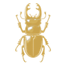

<!DOCTYPE html>
<html lang="fr">
<head>
<meta charset="UTF-8" />
<meta name="viewport" content="width=device-width, initial-scale=1, viewport-fit=cover" />
<title>BioDex — Carnet entomologique</title>
<link rel="manifest" href="manifest.webmanifest" />
<link rel="icon" href="icon-192.png" />
<link rel="apple-touch-icon" href="icon-192.png" />
<meta name="theme-color" content="#12160F" />
<link rel="preconnect" href="https://fonts.googleapis.com" />
<link rel="preconnect" href="https://fonts.gstatic.com" crossorigin />
<link rel="stylesheet" href="https://fonts.googleapis.com/css2?family=Fraunces:opsz,wght@9..144,400;9..144,500;9..144,600;9..144,700&display=swap" />
<style>
  html, body { margin: 0; padding: 0; background-color: #12160F; }
  body {
    background-image: radial-gradient(120% 60% at 50% -8%, #202a19 0%, #161b11 42%, #12160F 100%);
    background-attachment: fixed;
    -webkit-font-smoothing: antialiased;
    text-rendering: optimizeLegibility;
  }
  * { -webkit-tap-highlight-color: transparent; }
  input, textarea, button { font-size: 16px; } /* évite le zoom auto iOS */
  .leaflet-popup-content { margin: 10px 12px; font-family: -apple-system, BlinkMacSystemFont, 'Segoe UI', Roboto, sans-serif; }
  .bd-card { transition: transform .16s ease, box-shadow .16s ease; }
  .bd-card:active { transform: scale(.975); }
  .bd-press { transition: transform .12s ease, box-shadow .12s ease, filter .12s ease; }
  .bd-press:active { transform: translateY(1px); filter: brightness(1.06); }
  @keyframes bdFade { from { opacity: 0; transform: translateY(7px); } to { opacity: 1; transform: none; } }
  .bd-fade { animation: bdFade .35s ease both; }
  /* épingle entomologique */
  .bd-pin-shaft { position: absolute; top: 3px; left: 50%; width: 2px; height: 26px; transform: translateX(-50%); background: linear-gradient(#E4C878, #8A6E2E); z-index: 2; border-radius: 2px; }
  .bd-pin-head { position: absolute; top: 0; left: 50%; width: 13px; height: 13px; transform: translateX(-50%); border-radius: 50%; z-index: 3; background: radial-gradient(circle at 35% 30%, #F3E2A8 0%, #C9A24B 45%, #7A5F27 100%); box-shadow: 0 2px 4px rgba(0,0,0,.55); }
  @media (prefers-reduced-motion: reduce) { *, .bd-fade { animation: none !important; transition: none !important; } }
</style>
<link rel="stylesheet" href="https://cdnjs.cloudflare.com/ajax/libs/leaflet/1.9.4/leaflet.min.css" />
<script src="https://cdnjs.cloudflare.com/ajax/libs/leaflet/1.9.4/leaflet.min.js"></script>
<script src="https://cdnjs.cloudflare.com/ajax/libs/react/18.3.1/umd/react.production.min.js"></script>
<script src="https://cdnjs.cloudflare.com/ajax/libs/react-dom/18.3.1/umd/react-dom.production.min.js"></script>
<script src="https://cdnjs.cloudflare.com/ajax/libs/babel-standalone/7.26.4/babel.min.js"></script>
<!-- IA locale (facultative) : reconnaissance dans le navigateur, sans serveur ni clé -->
<script src="https://cdn.jsdelivr.net/npm/@tensorflow/tfjs@4.11.0/dist/tf.min.js"></script>
<script src="https://cdn.jsdelivr.net/npm/@tensorflow-models/mobilenet@2.1.1/dist/mobilenet.min.js"></script>
</head>
<body>
<div id="root"></div>
<script type="text/babel" data-presets="react">
const { useState, useEffect, useRef } = React;

// ============ BioDex v0.20 (PWA) ============

const VERSION = "v0.20";

const C = {
  fond: "#12160F",
  panneau: "#1C2318",
  panneauClair: "#2C3623",
  bordure: "#3A4531",
  ambre: "#C9A24B",
  ambreClair: "#E4C878",
  lichen: "#94A97B",
  papier: "#ECE4D0",
  papierSombre: "#A8A48F",
  etiquette: "#ECE4D0",
  encre: "#2A2416",
  rouge: "#C06A42",
};

const serif = "'Fraunces', Georgia, 'Times New Roman', serif";
const sans = "-apple-system, BlinkMacSystemFont, 'Segoe UI', Roboto, sans-serif";

const BIOTOPES = [
  { id: "foret", label: "Forêt", emoji: "🌲" },
  { id: "prairie", label: "Prairie", emoji: "🌾" },
  { id: "zone-humide", label: "Zone humide", emoji: "🪷" },
  { id: "riviere", label: "Bord de rivière", emoji: "🏞️" },
  { id: "jardin", label: "Jardin", emoji: "🏡" },
  { id: "lande", label: "Lande / friche", emoji: "🌿" },
  { id: "urbain", label: "Urbain", emoji: "🏙️" },
  { id: "littoral", label: "Littoral", emoji: "🌊" },
  { id: "montagne", label: "Montagne", emoji: "⛰️" },
  { id: "autre", label: "Autre", emoji: "📍" },
];

const CIELS = [
  { id: "soleil", label: "Ensoleillé", emoji: "☀️" },
  { id: "peu-nuageux", label: "Peu nuageux", emoji: "⛅" },
  { id: "couvert", label: "Couvert", emoji: "☁️" },
  { id: "brouillard", label: "Brouillard", emoji: "🌫️" },
  { id: "pluie", label: "Pluie", emoji: "🌧️" },
  { id: "neige", label: "Neige", emoji: "🌨️" },
  { id: "orage", label: "Orage", emoji: "⛈️" },
];

// Codes météo WMO (Open-Meteo) → catégorie de ciel
function wmoVersCiel(code) {
  if (code === 0) return "soleil";
  if (code === 1 || code === 2) return "peu-nuageux";
  if (code === 3) return "couvert";
  if (code === 45 || code === 48) return "brouillard";
  if ((code >= 51 && code <= 67) || (code >= 80 && code <= 82)) return "pluie";
  if ((code >= 71 && code <= 77) || code === 85 || code === 86) return "neige";
  if (code >= 95) return "orage";
  return "";
}

// ---------- IndexedDB ----------
const DB_NOM = "biodex";
const DB_STORE = "observations";

function ouvrirDB() {
  return new Promise((resolve, reject) => {
    const req = indexedDB.open(DB_NOM, 1);
    req.onupgradeneeded = () => {
      const db = req.result;
      if (!db.objectStoreNames.contains(DB_STORE)) {
        db.createObjectStore(DB_STORE, { keyPath: "id" });
      }
    };
    req.onsuccess = () => resolve(req.result);
    req.onerror = () => reject(req.error);
  });
}

async function dbToutes() {
  const db = await ouvrirDB();
  return new Promise((resolve, reject) => {
    const tx = db.transaction(DB_STORE, "readonly");
    const req = tx.objectStore(DB_STORE).getAll();
    req.onsuccess = () => resolve(req.result || []);
    req.onerror = () => reject(req.error);
  });
}

async function dbAjouter(obs) {
  const db = await ouvrirDB();
  return new Promise((resolve, reject) => {
    const tx = db.transaction(DB_STORE, "readwrite");
    tx.objectStore(DB_STORE).put(obs);
    tx.oncomplete = () => resolve(true);
    tx.onerror = () => reject(tx.error);
  });
}

async function dbSupprimer(id) {
  const db = await ouvrirDB();
  return new Promise((resolve, reject) => {
    const tx = db.transaction(DB_STORE, "readwrite");
    tx.objectStore(DB_STORE).delete(id);
    tx.oncomplete = () => resolve(true);
    tx.onerror = () => reject(tx.error);
  });
}

// ---------- Compression photo (qualité conservée : 1600px max) ----------
function compresserImage(file, maxDim = 2560, qualite = 0.85) {
  return new Promise((resolve, reject) => {
    const reader = new FileReader();
    reader.onload = (e) => {
      const img = new Image();
      img.onload = () => {
        let { width, height } = img;
        if (width > height && width > maxDim) {
          height = Math.round((height * maxDim) / width);
          width = maxDim;
        } else if (height > maxDim) {
          width = Math.round((width * maxDim) / height);
          height = maxDim;
        }
        const canvas = document.createElement("canvas");
        canvas.width = width;
        canvas.height = height;
        canvas.getContext("2d").drawImage(img, 0, 0, width, height);
        canvas.toBlob(
          (blob) => (blob ? resolve(blob) : reject(new Error("compression"))),
          "image/jpeg",
          qualite
        );
      };
      img.onerror = reject;
      img.src = e.target.result;
    };
    reader.onerror = reject;
    reader.readAsDataURL(file);
  });
}

// ---------- Utilitaires ----------
function formatDate(iso) {
  try {
    return new Date(iso).toLocaleDateString("fr-FR", {
      day: "numeric", month: "short", year: "numeric", hour: "2-digit", minute: "2-digit",
    });
  } catch { return iso; }
}
const biotopeOf = (id) => BIOTOPES.find((b) => b.id === id) || BIOTOPES[BIOTOPES.length - 1];
const cielOf = (id) => CIELS.find((c) => c.id === id) || null;

// ---------- IA locale : MobileNet (TensorFlow.js), tourne dans le navigateur ----------
// Correspondances entre les classes ImageNet (anglais) et des noms FR d'arthropodes.
// L'ORDRE compte : les pièges de sous-chaîne sont gérés (ex. "beetle" contient "bee",
// "butterfly"/"dragonfly" contiennent "fly", "mantis" contient "ant"), donc les entrées
// génériques (mouche, araignée) sont placées après les spécifiques.
const ARTHRO_FR = [
  { cles: ["ladybug", "ladybird"], nom: "Coccinelle", sci: "Coccinellidae", niveau: "famille" },
  { cles: ["tiger beetle"], nom: "Cicindèle", sci: "Cicindelinae", niveau: "sous-famille" },
  { cles: ["ground beetle", "carabid"], nom: "Carabe", sci: "Carabidae", niveau: "famille" },
  { cles: ["long-horned beetle", "longicorn"], nom: "Longicorne", sci: "Cerambycidae", niveau: "famille" },
  { cles: ["leaf beetle", "chrysomelid"], nom: "Chrysomèle", sci: "Chrysomelidae", niveau: "famille" },
  { cles: ["dung beetle"], nom: "Bousier", sci: "Scarabaeidae", niveau: "famille" },
  { cles: ["rhinoceros beetle"], nom: "Scarabée rhinocéros", sci: "Dynastinae", niveau: "sous-famille" },
  { cles: ["weevil"], nom: "Charançon", sci: "Curculionidae", niveau: "famille" },
  { cles: ["bee"], nom: "Abeille", sci: "Anthophila", niveau: "clade" },
  { cles: ["ant,", "emmet", "pismire"], nom: "Fourmi", sci: "Formicidae", niveau: "famille" },
  { cles: ["cricket"], nom: "Grillon", sci: "Gryllidae", niveau: "famille" },
  { cles: ["grasshopper"], nom: "Sauterelle / criquet", sci: "Orthoptera", niveau: "ordre" },
  { cles: ["walking stick", "stick insect"], nom: "Phasme", sci: "Phasmatodea", niveau: "ordre" },
  { cles: ["cockroach", "roach"], nom: "Blatte", sci: "Blattodea", niveau: "ordre" },
  { cles: ["mantis", "mantid"], nom: "Mante", sci: "Mantodea", niveau: "ordre" },
  { cles: ["cicada", "cicala"], nom: "Cigale", sci: "Cicadidae", niveau: "famille" },
  { cles: ["leafhopper"], nom: "Cicadelle", sci: "Cicadellidae", niveau: "famille" },
  { cles: ["lacewing"], nom: "Chrysope", sci: "Chrysopidae", niveau: "famille" },
  { cles: ["dragonfly", "darning needle"], nom: "Libellule", sci: "Anisoptera", niveau: "sous-ordre" },
  { cles: ["damselfly"], nom: "Demoiselle", sci: "Zygoptera", niveau: "sous-ordre" },
  { cles: ["monarch"], nom: "Monarque", sci: "Danaus plexippus", niveau: "espèce" },
  { cles: ["admiral"], nom: "Vulcain / amiral", sci: "Nymphalidae", niveau: "famille" },
  { cles: ["ringlet"], nom: "Tristan (papillon)", sci: "Satyrinae", niveau: "sous-famille" },
  { cles: ["cabbage butterfly"], nom: "Piéride du chou", sci: "Pieris", niveau: "genre" },
  { cles: ["sulphur butterfly", "sulfur butterfly"], nom: "Piéride jaune / souci", sci: "Coliadinae", niveau: "sous-famille" },
  { cles: ["lycaenid"], nom: "Azuré (lycène)", sci: "Lycaenidae", niveau: "famille" },
  { cles: ["fly"], nom: "Mouche", sci: "Diptera", niveau: "ordre" },
  { cles: ["black widow"], nom: "Veuve noire", sci: "Latrodectus", niveau: "genre" },
  { cles: ["tarantula"], nom: "Mygale", sci: "Theraphosidae", niveau: "famille" },
  { cles: ["wolf spider", "hunting spider"], nom: "Araignée-loup", sci: "Lycosidae", niveau: "famille" },
  { cles: ["garden spider", "argiope"], nom: "Épeire", sci: "Araneidae", niveau: "famille" },
  { cles: ["barn spider"], nom: "Épeire des granges", sci: "Araneus", niveau: "genre" },
  { cles: ["scorpion"], nom: "Scorpion", sci: "Scorpiones", niveau: "ordre" },
  { cles: ["harvestman", "daddy longlegs", "daddy-longlegs"], nom: "Faucheux", sci: "Opiliones", niveau: "ordre" },
  { cles: ["tick"], nom: "Tique", sci: "Ixodida", niveau: "ordre" },
  { cles: ["centipede"], nom: "Mille-pattes (chilopode)", sci: "Chilopoda", niveau: "classe" },
  { cles: ["isopod"], nom: "Cloporte", sci: "Isopoda", niveau: "ordre" },
  { cles: ["spider"], nom: "Araignée", sci: "Araneae", niveau: "ordre" },
];

let _modelePromise = null;
function chargerModele() {
  if (_modelePromise) return _modelePromise;
  _modelePromise = (async () => {
    if (typeof mobilenet === "undefined") throw new Error("lib-absente");
    return await mobilenet.load({ version: 2, alpha: 1.0 });
  })().catch((e) => { _modelePromise = null; throw e; });
  return _modelePromise;
}

function traduirePrediction(preds) {
  for (const p of preds) {
    const cn = (p.className || "").toLowerCase();
    for (const e of ARTHRO_FR) {
      if (e.cles.some((k) => cn.includes(k))) {
        return { nom: e.nom, nomSci: e.sci, niveau: e.niveau, confiance: p.probability };
      }
    }
  }
  return null;
}

async function identifierLocal(blob, zone) {
  const modele = await chargerModele();
  const url = URL.createObjectURL(blob);
  try {
    const img = await new Promise((res, rej) => {
      const i = new Image();
      i.onload = () => res(i);
      i.onerror = () => rej(new Error("image"));
      i.src = url;
    });
    // Zone = { x, y, w, h } en fractions (0-1) de l'image. Si absente ou trop petite, image entière.
    let cible = img;
    if (zone && zone.w > 0.05 && zone.h > 0.05) {
      const sx = Math.round(zone.x * img.naturalWidth);
      const sy = Math.round(zone.y * img.naturalHeight);
      const sw = Math.round(zone.w * img.naturalWidth);
      const sh = Math.round(zone.h * img.naturalHeight);
      const canvas = document.createElement("canvas");
      canvas.width = sw;
      canvas.height = sh;
      canvas.getContext("2d").drawImage(img, sx, sy, sw, sh, 0, 0, sw, sh);
      cible = canvas;
    }
    const preds = await modele.classify(cible, 10);
    return { match: traduirePrediction(preds), brut: (preds || []).slice(0, 3) };
  } finally {
    URL.revokeObjectURL(url);
  }
}

// ---------- Identification "cloud" précise (via la fonction serveur + Claude) ----------
// Découpe éventuellement la zone ciblée, encode en base64, appelle /.netlify/functions/identifier.
function blobVersCanvasBase64(blob, zone) {
  return new Promise((resolve, reject) => {
    const url = URL.createObjectURL(blob);
    const img = new Image();
    img.onload = () => {
      try {
        let sx = 0, sy = 0, sw = img.naturalWidth, sh = img.naturalHeight;
        if (zone && zone.w > 0.05 && zone.h > 0.05) {
          sx = Math.round(zone.x * img.naturalWidth);
          sy = Math.round(zone.y * img.naturalHeight);
          sw = Math.round(zone.w * img.naturalWidth);
          sh = Math.round(zone.h * img.naturalHeight);
        }
        // On plafonne à 1024px pour limiter la taille envoyée (coût + rapidité)
        const maxDim = 1024;
        let dw = sw, dh = sh;
        if (dw > dh && dw > maxDim) { dh = Math.round(dh * maxDim / dw); dw = maxDim; }
        else if (dh > maxDim) { dw = Math.round(dw * maxDim / dh); dh = maxDim; }
        const canvas = document.createElement("canvas");
        canvas.width = dw; canvas.height = dh;
        canvas.getContext("2d").drawImage(img, sx, sy, sw, sh, 0, 0, dw, dh);
        const dataUrl = canvas.toDataURL("image/jpeg", 0.85);
        URL.revokeObjectURL(url);
        resolve(dataUrl.split(",")[1]); // base64 sans préfixe
      } catch (e) { URL.revokeObjectURL(url); reject(e); }
    };
    img.onerror = () => { URL.revokeObjectURL(url); reject(new Error("image")); };
    img.src = url;
  });
}

async function identifierCloud(blob, zone, contexte) {
  const image = await blobVersCanvasBase64(blob, zone);
  const r = await fetch("/.netlify/functions/identifier", {
    method: "POST",
    headers: { "Content-Type": "application/json" },
    body: JSON.stringify({ mode: "identification", image, media_type: "image/jpeg", contexte }),
  });
  const j = await r.json().catch(() => ({}));
  if (!r.ok || j.erreur) throw new Error(j.erreur || "Service indisponible");
  return j.resultat; // { nom, nomSci, confiance, niveau, note, alternatives:[...] }
}

async function genererFiche(nom, nomSci) {
  const r = await fetch("/.netlify/functions/identifier", {
    method: "POST",
    headers: { "Content-Type": "application/json" },
    body: JSON.stringify({ mode: "fiche", nom, nomSci }),
  });
  const j = await r.json().catch(() => ({}));
  if (!r.ok || j.erreur) throw new Error(j.erreur || "Service indisponible");
  return j.resultat; // { description, alimentation, periode, habitat, repartition, conservation, faits, fiabilite }
}

// Lien de vérification sur iNaturalist (base communautaire fiable)
function lienINaturalist(nomSci, nom) {
  const terme = (nomSci || nom || "").trim();
  return "https://www.inaturalist.org/search?q=" + encodeURIComponent(terme);
}

// ---------- Sélecteur de zone (cadre tactile sur la photo) ----------
function SelecteurZone({ photoUrl, zone, onChange }) {
  const boxRef = useRef(null);
  const dragRef = useRef(null); // { mode, startX, startY, zone0 }

  function pointFrac(e) {
    const r = boxRef.current.getBoundingClientRect();
    const t = e.touches && e.touches[0] ? e.touches[0] : e;
    return {
      x: Math.min(1, Math.max(0, (t.clientX - r.left) / r.width)),
      y: Math.min(1, Math.max(0, (t.clientY - r.top) / r.height)),
    };
  }

  function debut(mode, e) {
    e.preventDefault();
    e.stopPropagation();
    const p = pointFrac(e);
    dragRef.current = { mode, startX: p.x, startY: p.y, zone0: { ...zone } };
    window.addEventListener("mousemove", bouge);
    window.addEventListener("mouseup", fin);
    window.addEventListener("touchmove", bouge, { passive: false });
    window.addEventListener("touchend", fin);
  }

  function bouge(e) {
    if (!dragRef.current) return;
    e.preventDefault();
    const p = pointFrac(e);
    const d = dragRef.current;
    const dx = p.x - d.startX;
    const dy = p.y - d.startY;
    let z = { ...d.zone0 };
    if (d.mode === "move") {
      z.x = Math.min(1 - d.zone0.w, Math.max(0, d.zone0.x + dx));
      z.y = Math.min(1 - d.zone0.h, Math.max(0, d.zone0.y + dy));
    } else if (d.mode === "resize") {
      z.w = Math.min(1 - d.zone0.x, Math.max(0.08, d.zone0.w + dx));
      z.h = Math.min(1 - d.zone0.y, Math.max(0.08, d.zone0.h + dy));
    }
    onChange(z);
  }

  function fin() {
    dragRef.current = null;
    window.removeEventListener("mousemove", bouge);
    window.removeEventListener("mouseup", fin);
    window.removeEventListener("touchmove", bouge);
    window.removeEventListener("touchend", fin);
  }

  const pct = (v) => `${v * 100}%`;

  return (
    <div ref={boxRef} style={{ position: "relative", width: "100%", borderRadius: 10, overflow: "hidden", border: `1px solid ${C.bordure}`, touchAction: "none", userSelect: "none" }}>
      
      {/* Voile sombre autour de la zone */}
      <div style={{ position: "absolute", inset: 0, boxShadow: "0 0 0 9999px rgba(0,0,0,0.45)", clipPath: `polygon(0 0, 0 100%, ${pct(zone.x)} 100%, ${pct(zone.x)} ${pct(zone.y)}, ${pct(zone.x + zone.w)} ${pct(zone.y)}, ${pct(zone.x + zone.w)} ${pct(zone.y + zone.h)}, ${pct(zone.x)} ${pct(zone.y + zone.h)}, ${pct(zone.x)} 100%, 100% 100%, 100% 0)`, pointerEvents: "none" }} />
      {/* Cadre */}
      <div
        onMouseDown={(e) => debut("move", e)}
        onTouchStart={(e) => debut("move", e)}
        style={{ position: "absolute", left: pct(zone.x), top: pct(zone.y), width: pct(zone.w), height: pct(zone.h), border: `2px solid ${C.ambre}`, boxSizing: "border-box", cursor: "move" }}
      >
        {/* Poignée de redimensionnement (coin bas-droit) */}
        <div
          onMouseDown={(e) => debut("resize", e)}
          onTouchStart={(e) => debut("resize", e)}
          style={{ position: "absolute", right: -12, bottom: -12, width: 28, height: 28, borderRadius: "50%", background: C.ambre, border: "2px solid #12160F", cursor: "nwse-resize", display: "flex", alignItems: "center", justifyContent: "center", fontSize: 13 }}
        >⤡</div>
      </div>
    </div>
  );
}

// Tris disponibles pour la collection
const TRIS = [
  { id: "recent", label: "Plus récentes d'abord" },
  { id: "ancien", label: "Plus anciennes d'abord" },
  { id: "nom", label: "Nom A → Z" },
  { id: "biotope", label: "Par biotope" },
];

function trierObservations(liste, tri) {
  const copie = [...liste];
  if (tri === "ancien") {
    copie.sort((a, b) => (a.date > b.date ? 1 : -1));
  } else if (tri === "nom") {
    copie.sort((a, b) =>
      (a.nom || "zzz").localeCompare(b.nom || "zzz", "fr", { sensitivity: "base" })
    );
  } else if (tri === "biotope") {
    copie.sort((a, b) => {
      const ba = biotopeOf(a.biotope).label, bb = biotopeOf(b.biotope).label;
      if (ba !== bb) return ba.localeCompare(bb, "fr");
      return a.date < b.date ? 1 : -1;
    });
  } else {
    copie.sort((a, b) => (a.date < b.date ? 1 : -1)); // "recent" (défaut)
  }
  return copie;
}

// Hook : URL d'objet pour un Blob (avec nettoyage)
function useBlobUrl(blob) {
  const [url, setUrl] = useState(null);
  useEffect(() => {
    if (!blob) { setUrl(null); return; }
    const u = URL.createObjectURL(blob);
    setUrl(u);
    return () => URL.revokeObjectURL(u);
  }, [blob]);
  return url;
}

// ---------- Petits composants ----------
function Bouton({ children, onClick, variante = "normal", style = {}, disabled }) {
  const base = {
    fontFamily: sans, fontSize: 14, fontWeight: 600, padding: "10px 16px",
    borderRadius: 9, border: `1px solid ${C.bordure}`, background: C.panneauClair,
    color: C.papier, cursor: disabled ? "not-allowed" : "pointer", opacity: disabled ? 0.5 : 1,
    letterSpacing: 0.2,
  };
  if (variante === "primaire") {
    base.background = `linear-gradient(#DDBB63, ${C.ambre})`;
    base.color = C.encre;
    base.border = "1px solid #A8863A";
    base.boxShadow = "0 1px 0 rgba(255,255,255,.25) inset, 0 2px 6px rgba(0,0,0,.35)";
    base.fontWeight = 700;
  }
  if (variante === "danger") {
    base.background = "transparent"; base.color = C.rouge; base.border = `1px solid ${C.rouge}`;
  }
  return <button className="bd-press" onClick={onClick} disabled={disabled} style={{ ...base, ...style }}>{children}</button>;
}

function PhotoBlob({ blob, alt, style }) {
  const url = useBlobUrl(blob);
  if (!url) {
    return (
      <div style={{ ...style, display: "flex", alignItems: "center", justifyContent: "center", background: C.panneauClair, color: C.papierSombre, fontSize: 26 }}>
        🐞
      </div>
    );
  }
  return ;
}

function Etiquette({ obs }) {
  return (
    <div style={{ padding: "8px 10px 9px", background: "linear-gradient(#F0E9D6, #E5DCC5)", color: C.encre, borderTop: "1px solid rgba(0,0,0,.12)", boxShadow: "0 1px 2px rgba(0,0,0,.25) inset" }}>
      <div style={{ fontFamily: sans, fontSize: 12.5, fontWeight: 700, lineHeight: 1.25, letterSpacing: 0.3, overflow: "hidden", textOverflow: "ellipsis", whiteSpace: "nowrap" }}>
        {obs.nom || "Spécimen non identifié"}
      </div>
      <div style={{ fontFamily: serif, fontStyle: "italic", fontSize: 12, color: "#6B6350", overflow: "hidden", textOverflow: "ellipsis", whiteSpace: "nowrap" }}>
        {obs.nomSci || "—"}
      </div>
      <div style={{ fontFamily: sans, fontSize: 9.5, letterSpacing: 0.4, textTransform: "uppercase", color: "#8A8065", marginTop: 4, paddingTop: 4, borderTop: "1px solid rgba(0,0,0,.08)", display: "flex", justifyContent: "space-between" }}>
        <span>{biotopeOf(obs.biotope).emoji} {biotopeOf(obs.biotope).label}</span>
        <span>{new Date(obs.date).toLocaleDateString("fr-FR")}</span>
      </div>
    </div>
  );
}

// ---------- Caméra intégrée (évite de quitter l'appli → pas de redémarrage Android) ----------
function CameraInterne({ onCapture, onFermer }) {
  const videoRef = useRef(null);
  const fluxRef = useRef(null);
  const [erreur, setErreur] = useState("");
  const [pret, setPret] = useState(false);

  useEffect(() => {
    let annule = false;
    (async () => {
      try {
        const flux = await navigator.mediaDevices.getUserMedia({
          video: { facingMode: "environment", width: { ideal: 4096 }, height: { ideal: 4096 } },
          audio: false,
        });
        if (annule) { flux.getTracks().forEach((t) => t.stop()); return; }
        fluxRef.current = flux;
        if (videoRef.current) {
          videoRef.current.srcObject = flux;
          await videoRef.current.play();
          setPret(true);
        }
      } catch {
        setErreur("Impossible d'accéder à la caméra. Vérifie l'autorisation, ou passe par la galerie après avoir photographié avec ton appli photo.");
      }
    })();
    return () => {
      annule = true;
      if (fluxRef.current) fluxRef.current.getTracks().forEach((t) => t.stop());
    };
  }, []);

  const [captureEnCours, setCaptureEnCours] = useState(false);

  function captureCanvas() {
    const v = videoRef.current;
    if (!v || !v.videoWidth) return null;
    let w = v.videoWidth, h = v.videoHeight;
    const maxDim = 2560;
    if (w > h && w > maxDim) { h = Math.round((h * maxDim) / w); w = maxDim; }
    else if (h > maxDim) { w = Math.round((w * maxDim) / h); h = maxDim; }
    const canvas = document.createElement("canvas");
    canvas.width = w; canvas.height = h;
    canvas.getContext("2d").drawImage(v, 0, 0, w, h);
    return new Promise((res) => canvas.toBlob((b) => res(b), "image/jpeg", 0.85));
  }

  async function capturer() {
    if (captureEnCours) return;
    setCaptureEnCours(true);
    try {
      let blob = null;
      // Méthode 1 : vraie photo pleine résolution du capteur (Chrome Android)
      if (typeof ImageCapture !== "undefined" && fluxRef.current) {
        try {
          const piste = fluxRef.current.getVideoTracks()[0];
          const brute = await new ImageCapture(piste).takePhoto();
          blob = await compresserImage(brute, 2560, 0.85);
        } catch { blob = null; }
      }
      // Méthode 2 (repli) : capture du flux vidéo
      if (!blob) blob = await captureCanvas();
      if (blob) onCapture(blob);
    } finally {
      setCaptureEnCours(false);
    }
  }

  return (
    <div style={{ position: "fixed", inset: 0, background: "#000", zIndex: 5000, display: "flex", flexDirection: "column" }}>
      <div style={{ flex: 1, position: "relative", overflow: "hidden" }}>
        <video ref={videoRef} playsInline muted style={{ width: "100%", height: "100%", objectFit: "cover" }} />
        {!pret && !erreur && (
          <div style={{ position: "absolute", inset: 0, display: "flex", alignItems: "center", justifyContent: "center", color: "#EDE8DC", fontFamily: sans, fontSize: 15 }}>
            Ouverture de la caméra…
          </div>
        )}
        {erreur && (
          <div style={{ position: "absolute", inset: 0, display: "flex", alignItems: "center", justifyContent: "center", padding: 24 }}>
            <div style={{ background: "#3A241C", color: "#E8A88F", fontFamily: sans, fontSize: 14, padding: "14px 16px", borderRadius: 10, lineHeight: 1.5 }}>
              {erreur}
            </div>
          </div>
        )}
      </div>
      <div style={{ padding: "18px 16px calc(18px + env(safe-area-inset-bottom))", background: "#0C0E0B", display: "flex", alignItems: "center", justifyContent: "space-between" }}>
        <Bouton onClick={onFermer}>Annuler</Bouton>
        <button onClick={capturer} disabled={!pret} aria-label="Capturer"
          style={{ width: 68, height: 68, borderRadius: "50%", border: "4px solid #EDE8DC", background: pret && !captureEnCours ? C.ambre : "#555", cursor: pret ? "pointer" : "not-allowed" }} />
        <div style={{ width: 76 }} />
      </div>
    </div>
  );
}

// Clé mois "AAAA-MM" et libellé lisible d'une observation
function moisDe(iso) {
  return (iso || "").slice(0, 7); // "2026-07"
}
function moisLisible(cle) {
  if (!cle) return "";
  const [a, m] = cle.split("-");
  const noms = ["janv.", "févr.", "mars", "avr.", "mai", "juin", "juil.", "août", "sept.", "oct.", "nov.", "déc."];
  return `${noms[parseInt(m, 10) - 1] || m} ${a}`;
}

// Applique les filtres actifs à la liste
function filtrerObservations(liste, f) {
  return liste.filter((o) => {
    if (f.biotope && o.biotope !== f.biotope) return false;
    if (f.mois && moisDe(o.date) !== f.mois) return false;
    if (f.texte) {
      const t = f.texte.toLowerCase();
      const cible = `${o.nom || ""} ${o.nomSci || ""}`.toLowerCase();
      if (!cible.includes(t)) return false;
    }
    return true;
  });
}

// ---------- Vue : statistiques ----------
function Stats({ observations, onFermer }) {
  const total = observations.length;
  const identifies = observations.filter((o) => o.nom || o.nomSci).length;
  const positionnees = observations.filter((o) => o.gps).length;

  // Répartition par biotope
  const parBiotope = {};
  observations.forEach((o) => { parBiotope[o.biotope] = (parBiotope[o.biotope] || 0) + 1; });
  const biotopesTri = Object.entries(parBiotope).sort((a, b) => b[1] - a[1]);
  const maxBio = biotopesTri.length ? biotopesTri[0][1] : 0;

  // Activité par mois (6 derniers mois présents)
  const parMois = {};
  observations.forEach((o) => { const m = moisDe(o.date); parMois[m] = (parMois[m] || 0) + 1; });
  const moisTri = Object.entries(parMois).sort((a, b) => (a[0] < b[0] ? -1 : 1)).slice(-6);
  const maxMois = moisTri.reduce((mx, [, n]) => Math.max(mx, n), 0);

  const carte = { background: "linear-gradient(#212A1B, #1A2015)", border: `1px solid ${C.bordure}`, borderRadius: 12, padding: "16px", boxShadow: "0 3px 10px rgba(0,0,0,.25)" };
  const titre = { fontFamily: sans, fontSize: 12, fontWeight: 700, letterSpacing: 0.8, textTransform: "uppercase", color: C.lichen, marginBottom: 12 };

  return (
    <div style={{ padding: 16, maxWidth: 560, margin: "0 auto" }}>
      {/* Chiffres clés */}
      <div style={{ display: "grid", gridTemplateColumns: "repeat(3, 1fr)", gap: 10, marginBottom: 16 }}>
        {[["Spécimens", total], ["Identifiés", identifies], ["Localisés", positionnees]].map(([lab, val]) => (
          <div key={lab} style={{ ...carte, padding: "14px 10px", textAlign: "center" }}>
            <div style={{ fontFamily: serif, fontSize: 30, fontWeight: 600, color: C.ambreClair, lineHeight: 1 }}>{val}</div>
            <div style={{ fontFamily: sans, fontSize: 11, letterSpacing: 0.5, textTransform: "uppercase", color: C.papierSombre, marginTop: 6 }}>{lab}</div>
          </div>
        ))}
      </div>

      {total === 0 && (
        <div style={{ ...carte, textAlign: "center", color: C.papierSombre, fontFamily: sans, fontSize: 14 }}>
          Ajoute des observations pour voir ta collection prendre forme ici.
        </div>
      )}

      {/* Répartition par biotope */}
      {biotopesTri.length > 0 && (
        <div style={{ ...carte, marginBottom: 16 }}>
          <div style={titre}>Par biotope</div>
          {biotopesTri.map(([id, n]) => (
            <div key={id} style={{ marginBottom: 10 }}>
              <div style={{ display: "flex", justifyContent: "space-between", fontFamily: sans, fontSize: 13, color: C.papier, marginBottom: 4 }}>
                <span>{biotopeOf(id).emoji} {biotopeOf(id).label}</span>
                <span style={{ color: C.papierSombre }}>{n}</span>
              </div>
              <div style={{ height: 8, borderRadius: 4, background: "#0F130C", overflow: "hidden" }}>
                <div style={{ height: "100%", width: `${(n / maxBio) * 100}%`, borderRadius: 4, background: `linear-gradient(90deg, ${C.ambre}, ${C.ambreClair})` }} />
              </div>
            </div>
          ))}
        </div>
      )}

      {/* Activité par mois */}
      {moisTri.length > 0 && (
        <div style={{ ...carte, marginBottom: 16 }}>
          <div style={titre}>Activité récente</div>
          <div style={{ display: "flex", alignItems: "flex-end", gap: 8, height: 120 }}>
            {moisTri.map(([m, n]) => (
              <div key={m} style={{ flex: 1, display: "flex", flexDirection: "column", alignItems: "center", gap: 6 }}>
                <div style={{ fontFamily: sans, fontSize: 12, fontWeight: 700, color: C.ambreClair }}>{n}</div>
                <div style={{ width: "100%", maxWidth: 44, height: `${maxMois ? (n / maxMois) * 84 : 0}px`, minHeight: 4, borderRadius: "5px 5px 0 0", background: `linear-gradient(${C.ambreClair}, ${C.ambre})` }} />
                <div style={{ fontFamily: sans, fontSize: 10, color: C.papierSombre, textAlign: "center", lineHeight: 1.2 }}>{moisLisible(m)}</div>
              </div>
            ))}
          </div>
        </div>
      )}
    </div>
  );
}

// ---------- Autocomplétion des noms via iNaturalist (recherche de taxons, gratuite) ----------
// N.B. : c'est l'API de RECHERCHE de noms (ouverte), pas la reconnaissance photo.
async function chercherTaxons(terme, signal) {
  const url = "https://api.inaturalist.org/v1/taxa/autocomplete?locale=fr&per_page=8&q=" + encodeURIComponent(terme);
  const r = await fetch(url, { signal });
  if (!r.ok) throw new Error("http");
  const d = await r.json();
  return (d.results || [])
    .filter((t) => t.rank_level == null || t.rank_level <= 60) // jusqu'au niveau famille et plus fin
    .map((t) => ({
      id: t.id,
      // nom commun (FR si dispo) et nom scientifique
      commun: t.preferred_common_name || "",
      sci: t.name || "",
      rang: t.rank || "",
      groupe: t.iconic_taxon_name || "",
    }));
}

// ---------- Capture rapide (file "à trier") : shoot éclair, GPS/météo figés ----------
function CaptureRapide({ onAjout, onFermer, aTrier, onOuvrir }) {
  const [montrerCamera, setMontrerCamera] = useState(false);
  const [flash, setFlash] = useState("");
  const inputRef = useRef(null);

  function figerContexte() {
    // Renvoie une promesse résolue avec { gps, gpsEtat } ; météo récupérée en différé si réseau.
    return new Promise((resolve) => {
      if (!navigator.geolocation) { resolve({ gps: null }); return; }
      navigator.geolocation.getCurrentPosition(
        (pos) => resolve({ gps: {
          lat: Math.round(pos.coords.latitude * 100000) / 100000,
          lon: Math.round(pos.coords.longitude * 100000) / 100000,
          precision: Math.round(pos.coords.accuracy),
        } }),
        () => resolve({ gps: null }),
        { enableHighAccuracy: true, timeout: 12000 }
      );
    });
  }

  async function meteoPour(gps) {
    if (!gps) return null;
    try {
      const r = await fetch(`https://api.open-meteo.com/v1/forecast?latitude=${gps.lat}&longitude=${gps.lon}&current=temperature_2m,weather_code`);
      if (!r.ok) return null;
      const d = await r.json();
      const cur = d.current || {};
      return { ciel: wmoVersCiel(cur.weather_code), temp: typeof cur.temperature_2m === "number" ? String(Math.round(cur.temperature_2m)) : "", meteoAuto: true };
    } catch { return null; }
  }

  async function traiterBlob(blob) {
    const { gps } = await figerContexte();
    const m = await meteoPour(gps); // null si hors réseau → météo récupérée au tri
    const obs = {
      id: `${Date.now()}-${Math.floor(Math.random() * 9999)}`,
      statut: "a_trier",
      nom: "", nomSci: "", biotope: "", notes: "",
      ciel: m ? m.ciel : "", temp: m ? m.temp : "", meteoAuto: m ? true : false,
      meteoARattraper: m ? false : !!gps, // à compléter au tri si on avait le GPS mais pas le réseau
      gps: gps || null,
      date: new Date().toISOString(),
      photo: blob,
    };
    const ok = await onAjout(obs);
    setFlash(ok ? "✓ Ajoutée à la file" + (gps ? " · position figée" : " · sans GPS") : "Échec de l'ajout");
    setTimeout(() => setFlash(""), 2600);
  }

  async function choisirFichier(e) {
    const f = e.target.files && e.target.files[0];
    if (!f) return;
    try {
      const blob = await compresserImage(f);
      await traiterBlob(blob);
    } catch {
      setFlash("Image illisible");
      setTimeout(() => setFlash(""), 2600);
    }
  }

  return (
    <div style={{ padding: 16, maxWidth: 560, margin: "0 auto" }}>
      {montrerCamera && (
        <CameraInterne
          onCapture={async (blob) => { setMontrerCamera(false); await traiterBlob(blob); }}
          onFermer={() => setMontrerCamera(false)}
        />
      )}

      <div style={{ fontFamily: sans, fontSize: 14, color: C.papierSombre, lineHeight: 1.5, marginBottom: 16 }}>
        Photographie sans t'arrêter : la position et la météo sont <b style={{ color: C.papier }}>figées sur le moment</b>. Tu complèteras l'identification plus tard, au calme.
      </div>

      <input ref={inputRef} type="file" accept="image/*" onChange={choisirFichier} style={{ display: "none" }} />
      <div style={{ display: "flex", gap: 10, marginBottom: 12 }}>
        <Bouton variante="primaire" onClick={() => setMontrerCamera(true)} style={{ flex: 2 }}>📷 Photo éclair</Bouton>
        <div style={{ position: "relative", flex: 1 }}>
          <Bouton onClick={() => {}} style={{ width: "100%" }}>🖼️ Galerie</Bouton>
          <input type="file" accept="image/*" onChange={choisirFichier} style={{ position: "absolute", top: 0, left: 0, width: "100%", height: "100%", opacity: 0, cursor: "pointer" }} />
        </div>
      </div>

      {flash && (
        <div style={{ fontFamily: sans, fontSize: 13, color: C.lichen, marginBottom: 12, padding: "8px 12px", background: C.panneau, borderRadius: 8, border: `1px solid ${C.bordure}` }}>{flash}</div>
      )}

      {/* File d'attente */}
      <div style={{ fontFamily: sans, fontSize: 12, fontWeight: 700, letterSpacing: 0.8, textTransform: "uppercase", color: C.lichen, margin: "8px 0 12px" }}>
        En attente ({aTrier.length})
      </div>

      {aTrier.length === 0 ? (
        <div style={{ textAlign: "center", padding: "40px 24px", border: `1px solid ${C.bordure}`, borderRadius: 14, background: "linear-gradient(#191F15, #14180F)", fontFamily: sans, fontSize: 14, color: C.papierSombre }}>
          Aucune photo en attente. Shoote une bestiole, elle apparaîtra ici.
        </div>
      ) : (
        <div style={{ display: "grid", gridTemplateColumns: "repeat(auto-fill, minmax(150px, 1fr))", gap: 14 }}>
          {aTrier.map((o) => (
            <div key={o.id} className="bd-card" onClick={() => onOuvrir(o.id)}
              style={{ background: "linear-gradient(#212A1B, #1A2015)", border: `1px solid ${C.bordure}`, borderRadius: 11, overflow: "hidden", cursor: "pointer", position: "relative" }}>
              <PhotoBlob blob={o.photo} alt="à trier" style={{ width: "100%", aspectRatio: "1", objectFit: "cover", display: "block" }} />
              <div style={{ padding: "8px 10px", fontFamily: sans, fontSize: 11, color: C.papierSombre, display: "flex", justifyContent: "space-between", alignItems: "center" }}>
                <span>{new Date(o.date).toLocaleDateString("fr-FR")}</span>
                <span>{o.gps ? "📍" : "—"}</span>
              </div>
              <div style={{ position: "absolute", top: 8, right: 8, background: "rgba(201,162,75,.92)", color: C.encre, fontFamily: sans, fontSize: 10, fontWeight: 700, padding: "3px 7px", borderRadius: 12 }}>À trier</div>
            </div>
          ))}
        </div>
      )}
    </div>
  );
}

// ---------- Vue : formulaire ----------
function NouvelleObservation({ onSauver, onAnnuler, base }) {
  const modeTri = !!base;
  const [photoBlob, setPhotoBlob] = useState(base ? base.photo : null);
  const [nom, setNom] = useState(base ? base.nom || "" : "");
  const [nomSci, setNomSci] = useState(base ? base.nomSci || "" : "");
  const [biotope, setBiotope] = useState(base ? base.biotope || "" : "");
  const [ciel, setCiel] = useState(base ? base.ciel || "" : "");
  const [temp, setTemp] = useState(base ? base.temp || "" : "");
  const [meteoAuto, setMeteoAuto] = useState(base ? !!base.meteoAuto : false);
  const [meteoEtat, setMeteoEtat] = useState(""); // "" | recherche | ok | echec
  const [notes, setNotes] = useState(base ? base.notes || "" : "");
  const [gps, setGps] = useState(base ? base.gps || null : null);
  const [gpsEtat, setGpsEtat] = useState(base ? (base.gps ? "ok" : "refuse") : "attente");
  const [enregistrement, setEnregistrement] = useState(false);
  const [montrerCamera, setMontrerCamera] = useState(false);
  const [erreur, setErreur] = useState("");
  const [idEtat, setIdEtat] = useState(""); // "" | recherche | ok | rien | echec
  const [idResultat, setIdResultat] = useState(null);
  const [idBrut, setIdBrut] = useState(null);
  const [cloudEtat, setCloudEtat] = useState(""); // "" | recherche | ok | echec
  const [cloudResultat, setCloudResultat] = useState(null);
  const [cloudErreur, setCloudErreur] = useState("");
  const [ciblage, setCiblage] = useState(false);
  const [zone, setZone] = useState({ x: 0.2, y: 0.2, w: 0.6, h: 0.6 });
  const [suggestions, setSuggestions] = useState([]);
  const [sugEtat, setSugEtat] = useState(""); // "" | recherche | ok | echec
  const [sugVisible, setSugVisible] = useState(false);
  const [brouillonPropose, setBrouillonPropose] = useState(false);
  const photoUrl = useBlobUrl(photoBlob);
  const nomFocusRef = useRef(false);

  useEffect(() => {
    if (modeTri) {
      // Position déjà figée à la capture. On rattrape juste la météo si elle manquait (photo prise hors réseau).
      if (base && base.meteoARattraper && base.gps) chercherMeteo(base.gps);
      return;
    }
    if (!navigator.geolocation) { setGpsEtat("refuse"); return; }
    navigator.geolocation.getCurrentPosition(
      (pos) => {
        const g = {
          lat: Math.round(pos.coords.latitude * 100000) / 100000,
          lon: Math.round(pos.coords.longitude * 100000) / 100000,
          precision: Math.round(pos.coords.accuracy),
        };
        setGps(g);
        setGpsEtat("ok");
        chercherMeteo(g);
      },
      () => setGpsEtat("refuse"),
      { enableHighAccuracy: true, timeout: 15000 }
    );
  }, []);

  // --- Brouillon : restauration au montage (hors photo, non sérialisable simplement) ---
  useEffect(() => {
    if (modeTri) return;
    try {
      const brut = localStorage.getItem("biodex:brouillon");
      if (brut) {
        const b = JSON.parse(brut);
        if (b && (b.nom || b.nomSci || b.biotope || b.notes)) setBrouillonPropose(b);
      }
    } catch {}
  }, []);

  function restaurerBrouillon() {
    const b = brouillonPropose;
    if (!b) return;
    if (b.nom) setNom(b.nom);
    if (b.nomSci) setNomSci(b.nomSci);
    if (b.biotope) setBiotope(b.biotope);
    if (b.ciel) setCiel(b.ciel);
    if (b.temp) setTemp(b.temp);
    if (b.notes) setNotes(b.notes);
    setBrouillonPropose(false);
  }
  function ignorerBrouillon() {
    setBrouillonPropose(false);
    try { localStorage.removeItem("biodex:brouillon"); } catch {}
  }

  // --- Brouillon : sauvegarde à chaque changement de champ texte ---
  useEffect(() => {
    if (modeTri) return;
    const b = { nom, nomSci, biotope, ciel, temp, notes };
    const vide = !nom && !nomSci && !biotope && !ciel && !temp && !notes;
    try {
      if (vide) localStorage.removeItem("biodex:brouillon");
      else localStorage.setItem("biodex:brouillon", JSON.stringify(b));
    } catch {}
  }, [nom, nomSci, biotope, ciel, temp, notes]);

  // --- Autocomplétion iNaturalist (debounce 350 ms, annulation de la requête précédente) ---
  useEffect(() => {
    const terme = nom.trim();
    if (!nomFocusRef.current || terme.length < 3) { setSuggestions([]); setSugEtat(""); return; }
    const ctrl = new AbortController();
    setSugEtat("recherche");
    const t = setTimeout(async () => {
      try {
        const res = await chercherTaxons(terme, ctrl.signal);
        setSuggestions(res);
        setSugEtat("ok");
        setSugVisible(true);
      } catch (e) {
        if (e.name !== "AbortError") setSugEtat("echec");
      }
    }, 350);
    return () => { clearTimeout(t); ctrl.abort(); };
  }, [nom]);

  function choisirSuggestion(s) {
    if (s.commun) setNom(s.commun);
    if (s.sci) setNomSci(s.sci);
    setSugVisible(false);
    setSuggestions([]);
  }

  async function chercherMeteo(g) {
    setMeteoEtat("recherche");
    try {
      const r = await fetch(
        `https://api.open-meteo.com/v1/forecast?latitude=${g.lat}&longitude=${g.lon}&current=temperature_2m,weather_code,relative_humidity_2m,wind_speed_10m`
      );
      if (!r.ok) throw new Error("http");
      const d = await r.json();
      const cur = d.current || {};
      const cielId = wmoVersCiel(cur.weather_code);
      if (cielId) setCiel(cielId);
      if (typeof cur.temperature_2m === "number") setTemp(String(Math.round(cur.temperature_2m)));
      setMeteoAuto(true);
      setMeteoEtat("ok");
    } catch {
      setMeteoEtat("echec");
    }
  }

  async function choisirPhoto(e) {
    const f = e.target.files && e.target.files[0];
    if (!f) return;
    setErreur("");
    try {
      const blob = await compresserImage(f);
      setPhotoBlob(blob);
      setIdEtat(""); setIdResultat(null); setIdBrut(null); setCiblage(false);
    } catch {
      setErreur("Impossible de lire cette image. Essaie avec un autre fichier.");
    }
  }

  async function lancerIdentification() {
    if (!photoBlob || idEtat === "recherche") return;
    setIdEtat("recherche");
    setIdResultat(null);
    setIdBrut(null);
    try {
      const { match, brut } = await identifierLocal(photoBlob, ciblage ? zone : null);
      setIdBrut(brut);
      if (match) {
        setIdResultat(match);
        setIdEtat("ok");
      } else {
        setIdEtat("rien");
      }
    } catch (e) {
      setIdEtat("echec");
    }
  }

  function appliquerIdentification() {
    if (!idResultat) return;
    if (idResultat.nom) setNom(idResultat.nom);
    if (idResultat.nomSci) setNomSci(idResultat.nomSci);
  }

  async function lancerIdentificationCloud() {
    if (!photoBlob || cloudEtat === "recherche") return;
    setCloudEtat("recherche");
    setCloudResultat(null);
    setCloudErreur("");
    try {
      const contexte = {
        biotope: biotope ? biotopeOf(biotope).label : "",
        mois: new Date().toLocaleDateString("fr-FR", { month: "long" }),
        indice: nom || "",
      };
      const res = await identifierCloud(photoBlob, ciblage ? zone : null, contexte);
      setCloudResultat(res);
      setCloudEtat("ok");
    } catch (e) {
      setCloudErreur(String(e.message || e).includes("configur") ? "Clé API non configurée sur le serveur (voir réglages Netlify)." : "Identification précise indisponible (réseau, ou service non configuré).");
      setCloudEtat("echec");
    }
  }

  function appliquerCloud(source) {
    const res = source || cloudResultat;
    if (!res) return;
    if (res.nom) setNom(res.nom);
    if (res.nomSci) setNomSci(res.nomSci);
  }

  async function sauver() {
    if (!photoBlob) {
      setErreur("Ajoute une photo pour enregistrer l'observation.");
      return;
    }
    setEnregistrement(true);
    const obs = modeTri
      ? {
          ...base,
          nom: nom.trim(),
          nomSci: nomSci.trim(),
          biotope: biotope || "autre",
          ciel: ciel || "",
          temp: temp.trim(),
          meteoAuto,
          meteoARattraper: false,
          notes: notes.trim(),
          photo: photoBlob,
          // id, date, gps d'origine conservés via ...base
        }
      : {
          id: `${Date.now()}-${Math.floor(Math.random() * 9999)}`,
          nom: nom.trim(),
          nomSci: nomSci.trim(),
          biotope: biotope || "autre",
          ciel: ciel || "",
          temp: temp.trim(),
          meteoAuto,
          notes: notes.trim(),
          gps: gpsEtat === "ok" ? gps : null,
          date: new Date().toISOString(),
          photo: photoBlob,
        };
    const ok = await onSauver(obs);
    setEnregistrement(false);
    if (ok) { try { if (!modeTri) localStorage.removeItem("biodex:brouillon"); } catch {} }
    else setErreur("Échec de l'enregistrement. Réessaie — si ça persiste, dis-le au développeur 😉");
  }

  const champ = {
    width: "100%", boxSizing: "border-box", background: C.fond,
    border: `1px solid ${C.bordure}`, borderRadius: 8, color: C.papier,
    padding: "10px 12px", fontFamily: sans, fontSize: 16, outline: "none",
  };
  const libelle = { fontFamily: sans, fontSize: 12, fontWeight: 700, letterSpacing: 0.8, textTransform: "uppercase", color: C.lichen, marginBottom: 6, display: "block" };
  const inputOverlay = { position: "absolute", top: 0, left: 0, width: "100%", height: "100%", opacity: 0, cursor: "pointer" };

  return (
    <div style={{ padding: 16, maxWidth: 560, margin: "0 auto" }}>
      <h2 style={{ fontFamily: serif, color: C.papier, fontSize: 22, margin: "4px 0 16px" }}>{modeTri ? "Compléter l’observation" : "Nouvelle observation"}</h2>

      {brouillonPropose && (
        <div style={{ marginBottom: 16, padding: "12px 14px", background: "linear-gradient(#2C3623, #232B1D)", border: `1px solid #A8863A`, borderRadius: 10 }}>
          <div style={{ fontFamily: sans, fontSize: 14, color: C.papier, marginBottom: 10 }}>
            📝 Un brouillon non terminé a été retrouvé{brouillonPropose.nom ? ` (« ${brouillonPropose.nom} »)` : ""}. Le reprendre ?
          </div>
          <div style={{ display: "flex", gap: 8 }}>
            <Bouton variante="primaire" onClick={restaurerBrouillon} style={{ flex: 1 }}>Reprendre</Bouton>
            <Bouton onClick={ignorerBrouillon}>Ignorer</Bouton>
          </div>
          <div style={{ fontFamily: sans, fontSize: 11, color: C.papierSombre, marginTop: 8, fontStyle: "italic" }}>
            Note : la photo du brouillon n'est pas conservée, seulement les infos saisies.
          </div>
        </div>
      )}

      {/* Photo */}
      {montrerCamera && (
        <CameraInterne
          onCapture={(blob) => { setPhotoBlob(blob); setMontrerCamera(false); }}
          onFermer={() => setMontrerCamera(false)}
        />
      )}
      <div style={{ marginBottom: 16 }}>
        {photoUrl ? (
          <div style={{ position: "relative" }}>
            
            <div style={{ position: "absolute", bottom: 10, right: 10, display: "flex", gap: 8 }}>
              <Bouton onClick={() => setMontrerCamera(true)}>📷</Bouton>
              <div style={{ position: "relative" }}>
                <Bouton onClick={() => {}}>🖼️</Bouton>
                <input type="file" accept="image/*" onChange={choisirPhoto} style={inputOverlay} />
              </div>
            </div>
          </div>
        ) : (
          <div style={{ display: "flex", gap: 10 }}>
            <button onClick={() => setMontrerCamera(true)}
              style={{ flex: 1, boxSizing: "border-box", padding: "30px 12px", textAlign: "center", background: C.panneau, border: `2px dashed ${C.bordure}`, borderRadius: 10, color: C.papierSombre, fontFamily: sans, fontSize: 15, cursor: "pointer" }}>
              📷<br />Appareil photo
            </button>
            <div style={{ position: "relative", flex: 1, boxSizing: "border-box", padding: "30px 12px", textAlign: "center", background: C.panneau, border: `2px dashed ${C.bordure}`, borderRadius: 10, color: C.papierSombre, fontFamily: sans, fontSize: 15 }}>
              🖼️<br />Galerie
              <input type="file" accept="image/*" onChange={choisirPhoto} style={inputOverlay} />
            </div>
          </div>
        )}
      </div>

      {/* GPS */}
      <div style={{ marginBottom: 16, padding: "10px 12px", background: C.panneau, borderRadius: 8, border: `1px solid ${C.bordure}`, fontFamily: sans, fontSize: 13, color: C.papierSombre }}>
        {gpsEtat === "attente" && "📡 Recherche de la position GPS…"}
        {gpsEtat === "ok" && gps && (
          <span style={{ color: C.lichen }}>📍 Position : {gps.lat}, {gps.lon} <span style={{ color: C.papierSombre }}>(±{gps.precision} m)</span></span>
        )}
        {gpsEtat === "refuse" && "📡 GPS indisponible — l'observation sera enregistrée sans position."}
      </div>

      {/* Identification IA locale */}
      {photoBlob && (
        <div style={{ marginBottom: 16, padding: "12px", background: C.panneau, borderRadius: 8, border: `1px solid ${C.bordure}` }}>
          {ciblage && photoUrl && (
            <div style={{ marginBottom: 10 }}>
              <div style={{ fontFamily: sans, fontSize: 12, color: C.lichen, marginBottom: 6 }}>
                Déplace le cadre sur l'insecte, ajuste sa taille avec la poignée, puis lance l'analyse.
              </div>
              <SelecteurZone photoUrl={photoUrl} zone={zone} onChange={setZone} />
            </div>
          )}

          <div style={{ display: "flex", gap: 8, marginBottom: 8 }}>
            <Bouton onClick={() => setCiblage((v) => !v)} style={{ flex: 1 }}>
              {ciblage ? "✕ Zone entière" : "🎯 Cibler la zone"}
            </Bouton>
          </div>

          {/* Identification précise (Claude, via le serveur) */}
          <Bouton variante="primaire" onClick={lancerIdentificationCloud} disabled={cloudEtat === "recherche"} style={{ width: "100%", marginBottom: 8 }}>
            {cloudEtat === "recherche" ? "✨ Identification en cours…" : (cloudResultat ? "✨ Relancer l'identification précise" : "✨ Identifier (précis)")}
          </Bouton>

          {cloudErreur && (
            <div style={{ fontFamily: sans, fontSize: 13, color: "#E8A88F", marginBottom: 8 }}>{cloudErreur}</div>
          )}

          {cloudResultat && (
            <div style={{ marginBottom: 12, padding: "10px 12px", background: "linear-gradient(#2C3623, #232B1D)", border: `1px solid #A8863A`, borderRadius: 8 }}>
              <div style={{ fontFamily: sans, fontSize: 12, fontWeight: 700, letterSpacing: 0.8, textTransform: "uppercase", color: C.ambreClair, marginBottom: 6 }}>
                ✨ Proposition précise{cloudResultat.confiance ? ` · confiance ${cloudResultat.confiance}` : ""}{cloudResultat.niveau ? ` · ${cloudResultat.niveau}` : ""}
              </div>
              <div style={{ fontFamily: sans, fontSize: 16, fontWeight: 700, color: C.papier }}>{cloudResultat.nom || "—"}</div>
              <div style={{ fontFamily: serif, fontStyle: "italic", fontSize: 14, color: C.ambreClair, marginBottom: 6 }}>{cloudResultat.nomSci || ""}</div>
              {cloudResultat.note && <div style={{ fontFamily: sans, fontSize: 13, color: C.papier, lineHeight: 1.5, marginBottom: 10 }}>{cloudResultat.note}</div>}
              <Bouton variante="primaire" onClick={() => appliquerCloud()} style={{ width: "100%" }}>Utiliser ces noms</Bouton>

              {Array.isArray(cloudResultat.alternatives) && cloudResultat.alternatives.length > 0 && (
                <div style={{ marginTop: 12, paddingTop: 10, borderTop: `1px solid ${C.bordure}` }}>
                  <div style={{ fontFamily: sans, fontSize: 11, fontWeight: 700, letterSpacing: 0.6, textTransform: "uppercase", color: C.lichen, marginBottom: 8 }}>Autres hypothèses</div>
                  {cloudResultat.alternatives.map((a, i) => (
                    <div key={i} style={{ marginBottom: 8, padding: "8px 10px", background: "rgba(0,0,0,.18)", borderRadius: 6 }}>
                      <div style={{ fontFamily: sans, fontSize: 14, fontWeight: 600, color: C.papier }}>{a.nom || "—"}</div>
                      <div style={{ fontFamily: serif, fontStyle: "italic", fontSize: 13, color: C.ambre }}>{a.nomSci || ""}</div>
                      {a.pourquoi && <div style={{ fontFamily: sans, fontSize: 12, color: C.papierSombre, lineHeight: 1.4, margin: "3px 0 6px" }}>{a.pourquoi}</div>}
                      <button onClick={() => appliquerCloud(a)} style={{ fontFamily: sans, fontSize: 12, fontWeight: 600, padding: "5px 10px", borderRadius: 6, border: `1px solid ${C.bordure}`, background: C.panneauClair, color: C.papier, cursor: "pointer" }}>Utiliser plutôt celle-ci</button>
                    </div>
                  ))}
                </div>
              )}

              <div style={{ fontFamily: sans, fontSize: 11, color: C.papierSombre, marginTop: 8, fontStyle: "italic" }}>
                ⚠️ Proposition d'IA, à vérifier — surtout entre espèces proches.
              </div>
            </div>
          )}

          <div style={{ fontFamily: sans, fontSize: 11, color: C.papierSombre, margin: "4px 0 8px", textAlign: "center" }}>ou, sans réseau ni compte :</div>

          <Bouton onClick={lancerIdentification} disabled={idEtat === "recherche"} style={{ width: "100%" }}>
            {idEtat === "recherche" ? "🔬 Analyse en cours…" : (idResultat || idEtat === "rien" || idEtat === "echec" ? "🔬 Relancer le test local" : "🔬 Identifier (test local)")}
          </Bouton>
          {ciblage && (
            <div style={{ fontFamily: sans, fontSize: 11, color: C.papierSombre, marginTop: 6, fontStyle: "italic" }}>
              Le ciblage s'applique aux deux analyses. Ta photo enregistrée reste entière.
            </div>
          )}

          {idEtat === "recherche" && (
            <div style={{ fontFamily: sans, fontSize: 12, color: C.papierSombre, marginTop: 8, fontStyle: "italic" }}>
              Au premier lancement, le modèle (~15 Mo) se télécharge — ça peut prendre quelques secondes.
            </div>
          )}

          {idEtat === "echec" && (
            <div style={{ fontFamily: sans, fontSize: 13, color: "#E8A88F", marginTop: 10 }}>
              Modèle indisponible (pas de réseau au premier chargement, ou bibliothèque non chargée). Tu peux renseigner le nom à la main.
            </div>
          )}

          {idEtat === "rien" && (
            <div style={{ fontFamily: sans, fontSize: 13, color: C.papierSombre, marginTop: 10, lineHeight: 1.5 }}>
              Le modèle local ne reconnaît pas cet arthropode — il ne connaît qu'une trentaine de grands groupes courants. À renseigner à la main.
              {idBrut && idBrut.length > 0 && (
                <div style={{ marginTop: 6, fontSize: 11, color: "#7A7462" }}>
                  Le modèle a « vu » : {idBrut.map((b) => b.className.split(",")[0]).join(", ")}.
                </div>
              )}
            </div>
          )}

          {idResultat && (
            <div style={{ marginTop: 12 }}>
              <div style={{ fontFamily: sans, fontSize: 12, fontWeight: 700, letterSpacing: 0.8, textTransform: "uppercase", color: C.lichen, marginBottom: 8 }}>
                Proposition · {Math.round((idResultat.confiance || 0) * 100)}% · {idResultat.niveau}
              </div>
              <div style={{ fontFamily: sans, fontSize: 16, fontWeight: 700, color: C.papier }}>{idResultat.nom}</div>
              <div style={{ fontFamily: serif, fontStyle: "italic", fontSize: 14, color: C.ambre, marginBottom: 10 }}>{idResultat.nomSci}</div>
              <Bouton variante="primaire" onClick={appliquerIdentification} style={{ width: "100%" }}>Utiliser ces noms</Bouton>
              <div style={{ fontFamily: sans, fontSize: 11, color: C.papierSombre, marginTop: 8, fontStyle: "italic" }}>
                ⚠️ Modèle généraliste, identification grossière (groupe, pas espèce) — à vérifier.
              </div>
            </div>
          )}
        </div>
      )}

      {/* Identification */}
      <div style={{ marginBottom: 14, position: "relative" }}>
        <label style={libelle}>
          Nom (vernaculaire)
          {sugEtat === "recherche" && <span style={{ color: C.papierSombre, textTransform: "none", fontWeight: 400 }}> · recherche…</span>}
          {sugEtat === "echec" && <span style={{ color: C.papierSombre, textTransform: "none", fontWeight: 400 }}> · suggestions indisponibles (hors ligne ?)</span>}
        </label>
        <input style={champ} value={nom}
          onChange={(e) => setNom(e.target.value)}
          onFocus={() => { nomFocusRef.current = true; if (suggestions.length) setSugVisible(true); }}
          onBlur={() => { nomFocusRef.current = false; setTimeout(() => setSugVisible(false), 180); }}
          placeholder="ex : Lucane cerf-volant" autoComplete="off" />
        {sugVisible && suggestions.length > 0 && (
          <div style={{ position: "absolute", left: 0, right: 0, top: "100%", zIndex: 10, marginTop: 4, background: C.panneauClair, border: `1px solid ${C.bordure}`, borderRadius: 10, overflow: "hidden", boxShadow: "0 8px 20px rgba(0,0,0,.4)" }}>
            {suggestions.map((s) => (
              <button key={s.id} type="button"
                onMouseDown={(e) => { e.preventDefault(); choisirSuggestion(s); }}
                style={{ display: "block", width: "100%", textAlign: "left", padding: "9px 12px", background: "transparent", border: "none", borderBottom: `1px solid ${C.bordure}`, cursor: "pointer" }}>
                <div style={{ fontFamily: sans, fontSize: 14, color: C.papier }}>{s.commun || s.sci}</div>
                <div style={{ fontFamily: serif, fontStyle: "italic", fontSize: 12.5, color: C.ambre }}>{s.sci}{s.rang ? ` · ${s.rang}` : ""}</div>
              </button>
            ))}
          </div>
        )}
      </div>
      <div style={{ marginBottom: 14 }}>
        <label style={libelle}>Nom scientifique (optionnel)</label>
        <input style={{ ...champ, fontFamily: serif, fontStyle: "italic" }} value={nomSci} onChange={(e) => setNomSci(e.target.value)} placeholder="ex : Lucanus cervus" />
      </div>

      {/* Biotope */}
      <div style={{ marginBottom: 14 }}>
        <label style={libelle}>Biotope</label>
        <div style={{ display: "flex", flexWrap: "wrap", gap: 8 }}>
          {BIOTOPES.map((b) => (
            <button key={b.id} onClick={() => setBiotope(b.id)}
              style={{
                fontFamily: sans, fontSize: 13, padding: "7px 12px", borderRadius: 20, cursor: "pointer",
                border: `1px solid ${biotope === b.id ? C.ambre : C.bordure}`,
                background: biotope === b.id ? C.ambre : C.panneau,
                color: biotope === b.id ? C.encre : C.papier,
                fontWeight: biotope === b.id ? 700 : 400,
              }}>
              {b.emoji} {b.label}
            </button>
          ))}
        </div>
      </div>

      {/* Météo */}
      <div style={{ marginBottom: 14 }}>
        <label style={libelle}>
          Météo
          {meteoEtat === "recherche" && <span style={{ color: C.papierSombre, textTransform: "none", fontWeight: 400 }}> · récupération en cours…</span>}
          {meteoEtat === "ok" && <span style={{ color: C.ambre, textTransform: "none", fontWeight: 400 }}> · remplie automatiquement ✓</span>}
          {meteoEtat === "echec" && <span style={{ color: C.papierSombre, textTransform: "none", fontWeight: 400 }}> · auto indisponible, renseigne à la main</span>}
        </label>
        <div style={{ display: "flex", gap: 8, flexWrap: "wrap", alignItems: "center" }}>
          {CIELS.map((c) => (
            <button key={c.id} onClick={() => { setCiel(ciel === c.id ? "" : c.id); setMeteoAuto(false); }}
              style={{
                fontFamily: sans, fontSize: 13, padding: "7px 12px", borderRadius: 20, cursor: "pointer",
                border: `1px solid ${ciel === c.id ? C.ambre : C.bordure}`,
                background: ciel === c.id ? C.ambre : C.panneau,
                color: ciel === c.id ? C.encre : C.papier,
              }}>
              {c.emoji} {c.label}
            </button>
          ))}
          <input style={{ ...champ, width: 90 }} value={temp}
            onChange={(e) => { setTemp(e.target.value); setMeteoAuto(false); }}
            placeholder="°C" inputMode="numeric" />
        </div>
      </div>

      {/* Notes */}
      <div style={{ marginBottom: 18 }}>
        <label style={libelle}>Notes de terrain</label>
        <textarea style={{ ...champ, minHeight: 70, resize: "vertical" }} value={notes} onChange={(e) => setNotes(e.target.value)} placeholder="Comportement, plante hôte, taille estimée…" />
      </div>

      {erreur && (
        <div style={{ marginBottom: 14, padding: "10px 12px", borderRadius: 8, background: "#3A241C", color: "#E8A88F", fontFamily: sans, fontSize: 14 }}>
          {erreur}
        </div>
      )}

      <div style={{ display: "flex", gap: 10 }}>
        <Bouton onClick={onAnnuler} style={{ flex: 1 }}>Annuler</Bouton>
        <Bouton variante="primaire" onClick={sauver} disabled={enregistrement} style={{ flex: 2 }}>
          {enregistrement ? "Enregistrement…" : (modeTri ? "Classer dans la collection" : "Épingler dans la collection")}
        </Bouton>
      </div>
    </div>
  );
}

// ---------- Vue : détail ----------
function Detail({ obs, onFermer, onSupprimer, onMajFiche }) {
  const [confirme, setConfirme] = useState(false);
  const [ficheEtat, setFicheEtat] = useState(""); // "" | recherche | echec
  const [ficheErreur, setFicheErreur] = useState("");
  const ligne = { display: "flex", justifyContent: "space-between", padding: "10px 0", borderBottom: `1px solid ${C.bordure}`, fontFamily: sans, fontSize: 14 };
  const cle = { color: C.lichen, fontWeight: 600 };
  const val = { color: C.papier, textAlign: "right" };
  const meteo = cielOf(obs.ciel);
  const identifie = !!(obs.nom || obs.nomSci);
  const fiche = obs.fiche || null;

  async function lancerFiche() {
    if (ficheEtat === "recherche") return;
    setFicheEtat("recherche");
    setFicheErreur("");
    try {
      const f = await genererFiche(obs.nom, obs.nomSci);
      await onMajFiche(obs.id, f);
      setFicheEtat("");
    } catch (e) {
      setFicheErreur("Génération indisponible (réseau, ou service non configuré).");
      setFicheEtat("echec");
    }
  }

  const champFiche = (label, valeur) => valeur ? (
    <div style={{ marginBottom: 10 }}>
      <div style={{ fontFamily: sans, fontSize: 11, fontWeight: 700, letterSpacing: 0.6, textTransform: "uppercase", color: C.lichen, marginBottom: 3 }}>{label}</div>
      <div style={{ fontFamily: sans, fontSize: 14, color: C.papier, lineHeight: 1.5 }}>{valeur}</div>
    </div>
  ) : null;

  return (
    <div style={{ padding: 16, maxWidth: 560, margin: "0 auto" }}>
      <Bouton onClick={onFermer} style={{ marginBottom: 14 }}>← Collection</Bouton>
      <PhotoBlob blob={obs.photo} alt={obs.nom} style={{ width: "100%", borderRadius: 12, display: "block", border: `1px solid ${C.bordure}`, boxShadow: "0 4px 14px rgba(0,0,0,.35)" }} />
      <h2 style={{ fontFamily: serif, color: C.papier, fontSize: 25, fontWeight: 600, margin: "18px 0 2px", letterSpacing: 0.2 }}>
        {obs.nom || "Spécimen non identifié"}
      </h2>
      <div style={{ fontFamily: serif, fontStyle: "italic", fontSize: 17, color: C.ambre, marginBottom: 16 }}>
        {obs.nomSci || "Identification à préciser"}
      </div>

      <div style={ligne}><span style={cle}>Date</span><span style={val}>{formatDate(obs.date)}</span></div>
      <div style={ligne}><span style={cle}>Biotope</span><span style={val}>{biotopeOf(obs.biotope).emoji} {biotopeOf(obs.biotope).label}</span></div>
      <div style={ligne}>
        <span style={cle}>Météo{obs.meteoAuto ? " (auto)" : ""}</span>
        <span style={val}>{meteo ? `${meteo.emoji} ${meteo.label}` : "—"}{obs.temp ? ` · ${obs.temp}°C` : ""}</span>
      </div>
      <div style={ligne}>
        <span style={cle}>Position</span>
        {obs.gps ? (
          <a href={`https://www.openstreetmap.org/?mlat=${obs.gps.lat}&mlon=${obs.gps.lon}#map=16/${obs.gps.lat}/${obs.gps.lon}`}
             target="_blank" rel="noopener noreferrer" style={{ ...val, color: C.ambre, textDecoration: "underline" }}>
            {obs.gps.lat}, {obs.gps.lon} 🗺️
          </a>
        ) : (
          <span style={val}>Non enregistrée</span>
        )}
      </div>
      {obs.notes && (
        <div style={{ padding: "12px 0", fontFamily: sans, fontSize: 14, color: C.papier, lineHeight: 1.5 }}>
          <div style={{ color: C.lichen, fontWeight: 600, marginBottom: 4 }}>Notes de terrain</div>
          {obs.notes}
        </div>
      )}

      {/* Fiche naturaliste */}
      <div style={{ marginTop: 18 }}>
        {!fiche && identifie && (
          <div>
            <Bouton variante="primaire" onClick={lancerFiche} disabled={ficheEtat === "recherche"} style={{ width: "100%" }}>
              {ficheEtat === "recherche" ? "📖 Génération de la fiche…" : "📖 Générer la fiche naturaliste"}
            </Bouton>
            {ficheErreur && <div style={{ fontFamily: sans, fontSize: 13, color: "#E8A88F", marginTop: 8 }}>{ficheErreur}</div>}
          </div>
        )}
        {!fiche && !identifie && (
          <div style={{ fontFamily: sans, fontSize: 13, color: C.papierSombre, fontStyle: "italic", padding: "10px 0" }}>
            Identifie d'abord ce spécimen (nom ou nom scientifique) pour pouvoir générer sa fiche.
          </div>
        )}

        {fiche && (
          <div style={{ padding: "14px 16px", background: "linear-gradient(#212A1B, #1A2015)", border: `1px solid ${C.bordure}`, borderRadius: 12, boxShadow: "0 3px 10px rgba(0,0,0,.25)" }}>
            <div style={{ fontFamily: serif, fontSize: 18, fontWeight: 600, color: C.ambreClair, marginBottom: 12 }}>📖 Fiche naturaliste</div>
            {champFiche("Description", fiche.description)}
            {champFiche("Alimentation", fiche.alimentation)}
            {champFiche("Période d'apparition", fiche.periode)}
            {champFiche("Habitat", fiche.habitat)}
            {champFiche("Répartition", fiche.repartition)}
            {champFiche("Statut de conservation", fiche.conservation)}
            {champFiche("À savoir", fiche.faits)}

            <div style={{ marginTop: 12, padding: "10px 12px", background: "rgba(0,0,0,.2)", borderRadius: 8 }}>
              <div style={{ fontFamily: sans, fontSize: 12, color: C.papierSombre, lineHeight: 1.5 }}>
                ⚠️ Fiche générée par IA, à titre indicatif{fiche.fiabilite ? ` (fiabilité estimée : ${fiche.fiabilite})` : ""}. Le statut de conservation notamment doit être vérifié sur une source officielle.
              </div>
              <a href={lienINaturalist(obs.nomSci, obs.nom)} target="_blank" rel="noopener noreferrer"
                 style={{ display: "inline-block", marginTop: 8, fontFamily: sans, fontSize: 13, fontWeight: 600, color: C.ambre, textDecoration: "underline" }}>
                🔗 Vérifier sur iNaturalist
              </a>
            </div>

            <button onClick={lancerFiche} disabled={ficheEtat === "recherche"}
              style={{ marginTop: 10, fontFamily: sans, fontSize: 12, fontWeight: 600, padding: "6px 12px", borderRadius: 6, border: `1px solid ${C.bordure}`, background: C.panneauClair, color: C.papierSombre, cursor: "pointer" }}>
              {ficheEtat === "recherche" ? "Régénération…" : "↻ Régénérer"}
            </button>
          </div>
        )}
      </div>

      <div style={{ marginTop: 20 }}>
        {confirme ? (
          <div style={{ display: "flex", gap: 10, alignItems: "center" }}>
            <span style={{ fontFamily: sans, fontSize: 14, color: C.papierSombre, flex: 1 }}>Supprimer définitivement ?</span>
            <Bouton onClick={() => setConfirme(false)}>Non</Bouton>
            <Bouton variante="danger" onClick={() => onSupprimer(obs.id)}>Oui, supprimer</Bouton>
          </div>
        ) : (
          <Bouton variante="danger" onClick={() => setConfirme(true)}>Supprimer cette observation</Bouton>
        )}
      </div>
    </div>
  );
}

// ---------- Vue : carte ----------
function Carte({ observations, onOuvrirFiche }) {
  const divRef = useRef(null);
  const avecGps = observations.filter((o) => o.gps);
  const sansGps = observations.length - avecGps.length;

  useEffect(() => {
    if (!divRef.current || typeof L === "undefined") return;
    const carte = L.map(divRef.current, { zoomControl: true });
    L.tileLayer("https://tile.openstreetmap.org/{z}/{x}/{y}.png", {
      maxZoom: 19,
      attribution: "© OpenStreetMap",
    }).addTo(carte);

    const urls = [];
    const points = [];
    avecGps.forEach((o) => {
      const pt = [o.gps.lat, o.gps.lon];
      points.push(pt);
      const m = L.circleMarker(pt, {
        radius: 9,
        color: "#2A2519",
        weight: 2,
        fillColor: "#C9A24B",
        fillOpacity: 0.95,
      }).addTo(carte);

      const conteneur = document.createElement("div");
      conteneur.style.width = "150px";
      let urlPhoto = null;
      if (o.photo) {
        urlPhoto = URL.createObjectURL(o.photo);
        urls.push(urlPhoto);
      }
      conteneur.innerHTML =
        (urlPhoto ? '' : "") +
        '<div style="font-weight:700;font-size:13px;color:#2A2519;">' + (o.nom ? o.nom.replace(/</g, "&lt;") : "Spécimen non identifié") + "</div>" +
        '<div style="font-size:11px;color:#8A8065;margin-bottom:6px;">' +
        biotopeOf(o.biotope).emoji + " " + biotopeOf(o.biotope).label + " · " + new Date(o.date).toLocaleDateString("fr-FR") +
        "</div>";
      const btn = document.createElement("button");
      btn.textContent = "Voir la fiche";
      btn.style.cssText = "width:100%;padding:6px;border-radius:6px;border:none;background:#C9A24B;color:#2A2416;font-weight:700;font-size:13px;cursor:pointer;";
      btn.addEventListener("click", () => onOuvrirFiche(o.id));
      conteneur.appendChild(btn);
      m.bindPopup(conteneur);
    });

    if (points.length > 0) {
      carte.fitBounds(L.latLngBounds(points), { padding: [40, 40], maxZoom: 15 });
    } else {
      carte.setView([46.6, 2.4], 5); // France par défaut
    }

    return () => {
      carte.remove();
      urls.forEach((u) => URL.revokeObjectURL(u));
    };
  }, [observations]);

  return (
    <div style={{ padding: 16, maxWidth: 560, margin: "0 auto" }}>
      <div style={{ fontFamily: sans, fontSize: 13, color: C.papierSombre, marginBottom: 10 }}>
        <span style={{ color: C.ambre, fontWeight: 800 }}>{avecGps.length}</span> observation{avecGps.length > 1 ? "s" : ""} positionnée{avecGps.length > 1 ? "s" : ""}
        {sansGps > 0 && <span> · {sansGps} sans position</span>}
      </div>
      {avecGps.length === 0 && (
        <div style={{ fontFamily: sans, fontSize: 14, color: C.papierSombre, marginBottom: 10, padding: "10px 12px", background: C.panneau, borderRadius: 8, border: `1px solid ${C.bordure}` }}>
          Aucune observation avec position GPS pour l'instant — la carte se remplira au fil de tes sorties.
        </div>
      )}
      <div ref={divRef} style={{ width: "100%", height: "68vh", borderRadius: 10, border: `1px solid ${C.bordure}`, overflow: "hidden" }} />
    </div>
  );
}

// ---------- Vue : aide ----------
function Aide({ onFermer, onImportTermine }) {
  const p = { fontFamily: sans, fontSize: 14, color: C.papier, lineHeight: 1.6, marginBottom: 12 };
  const t = { fontFamily: sans, fontSize: 15, fontWeight: 800, color: C.ambre, margin: "18px 0 6px" };
  const [exportEtat, setExportEtat] = useState("");
  const [importEtat, setImportEtat] = useState("");

  async function exporter() {
    setExportEtat("Préparation de la sauvegarde…");
    try {
      const toutes = await dbToutes();
      const obsExport = [];
      for (const o of toutes) {
        let photo64 = null;
        if (o.photo) {
          photo64 = await new Promise((res, rej) => {
            const r = new FileReader();
            r.onload = () => res(r.result);
            r.onerror = rej;
            r.readAsDataURL(o.photo);
          });
        }
        obsExport.push({ ...o, photo: photo64 });
      }
      const json = JSON.stringify({ app: "biodex", version: VERSION, exporteLe: new Date().toISOString(), observations: obsExport });
      const blob = new Blob([json], { type: "application/json" });
      const url = URL.createObjectURL(blob);
      const a = document.createElement("a");
      a.href = url;
      a.download = "biodex-sauvegarde-" + new Date().toISOString().slice(0, 10) + ".json";
      document.body.appendChild(a);
      a.click();
      a.remove();
      setTimeout(() => URL.revokeObjectURL(url), 10000);
      setExportEtat("✓ " + toutes.length + " observation(s) exportée(s)");
    } catch {
      setExportEtat("Échec de l'export — réessaie.");
    }
  }

  async function importer(e) {
    const f = e.target.files && e.target.files[0];
    if (!f) return;
    setImportEtat("Lecture du fichier…");
    try {
      const d = JSON.parse(await f.text());
      if (!d || d.app !== "biodex" || !Array.isArray(d.observations)) throw new Error("format");
      let n = 0;
      for (const o of d.observations) {
        if (!o.id || !o.date) continue;
        let blob = null;
        if (o.photo && typeof o.photo === "string" && o.photo.indexOf("data:") === 0) {
          const r = await fetch(o.photo);
          blob = await r.blob();
        }
        await dbAjouter({ ...o, photo: blob });
        n++;
      }
      setImportEtat("✓ " + n + " observation(s) importée(s)");
      onImportTermine();
    } catch {
      setImportEtat("Fichier invalide — est-ce bien une sauvegarde BioDex ?");
    }
  }
  return (
    <div style={{ padding: 16, maxWidth: 560, margin: "0 auto" }}>
      <Bouton onClick={onFermer} style={{ marginBottom: 14 }}>← Retour</Bouton>
      <h2 style={{ fontFamily: serif, color: C.papier, fontSize: 24, margin: "4px 0 10px" }}>BioDex — le guide</h2>
      <p style={p}>
        BioDex est ton carnet de terrain entomologique : chaque insecte croisé devient un spécimen épinglé dans ta boîte de collection virtuelle, avec sa photo, son biotope, sa position GPS et la météo du moment.
      </p>
      <div style={t}>📥 À trier (capture rapide)</div>
      <p style={p}>
        Sur le terrain, l'onglet « À trier » te laisse photographier à la cha00eene sans rien remplir : la position GPS et la m00e9t00e9o sont fig00e9es au moment de la prise. Plus tard, au calme, touche une photo en attente pour compl00e9ter l'identification et la classer dans ta collection. Si tu shootes hors r00e9seau, la position est quand m00eame fig00e9e et la m00e9t00e9o est rattrap00e9e (au bon endroit) au moment du tri.
      </p>
      <div style={t}>➕ Ajouter une observation</div>
      <p style={p}>
        Appuie sur « Nouvelle observation », utilise « Appareil photo » pour capturer le spécimen sans quitter l'appli, ou « Galerie » pour reprendre un cliché existant. Astuce : pour les macros de haute qualité (zoom, mise au point fine), photographie d'abord avec ton appli photo native puis récupère le cliché via « Galerie ». La position GPS est capturée automatiquement si tu l'autorises, et la météo (ciel + température) est récupérée toute seule à partir de ta position — tu peux la corriger à la main si besoin. Seule la photo est obligatoire.
      </p>
      <div style={t}>🗃️ Ta collection</div>
      <p style={p}>
        La grille présente tes spécimens comme dans une boîte entomologique, avec un menu de tri (récentes, anciennes, nom, biotope) dont le choix est mémorisé. Touche une carte pour la fiche complète — le lien 🗺️ de la position ouvre le point exact sur OpenStreetMap, et le bouton de suppression se trouve en bas de la fiche.
      </p>
      <div style={t}>🔍 Filtres & recherche</div>
      <p style={p}>
        Dans la collection, la barre de recherche retrouve un spécimen par son nom (fran00e7ais ou latin). Le bouton « Filtres » affine par biotope et par p00e9riode. Le tri (r00e9centes, anciennes, nom, biotope) reste dispo au-dessus.
      </p>
      <div style={t}>📊 Statistiques</div>
      <p style={p}>
        L'onglet Stats r00e9sume ta collection : nombre de sp00e9cimens, combien sont identifi00e9s et localis00e9s, la r00e9partition par biotope et ton activit00e9 des derniers mois.
      </p>
      <div style={t}>🗺️ La carte</div>
      <p style={p}>
        L'onglet Carte affiche toutes tes observations positionnées sur une carte OpenStreetMap. Touche un point ambré pour voir la miniature du spécimen et ouvrir sa fiche. La carte nécessite du réseau pour charger le fond de plan.
      </p>
      <div style={t}>📲 Installer l'appli</div>
      <p style={p}>
        Dans le menu de ton navigateur, choisis « Ajouter à l'écran d'accueil » (ou « Installer l'application ») : BioDex se lance alors comme une vraie appli, et fonctionne même hors connexion — pratique en pleine nature. Seule la météo auto nécessite du réseau.
      </p>
      <div style={t}>💾 Stockage & sauvegarde</div>
      <p style={p}>
        Tes observations sont sauvegardées sur ton téléphone (photos jusqu'à 2560 px). Elles ne sont pas synchronisées entre appareils : pense à exporter régulièrement une sauvegarde et à la mettre à l'abri (Drive, PC…). L'import restaure une sauvegarde — les observations déjà présentes sont conservées, les doublons écrasés proprement.
      </p>
      <div style={{ display: "flex", gap: 10, marginBottom: 8 }}>
        <Bouton variante="primaire" onClick={exporter} style={{ flex: 1 }}>📤 Exporter</Bouton>
        <div style={{ position: "relative", flex: 1 }}>
          <Bouton onClick={() => {}} style={{ width: "100%" }}>📥 Importer</Bouton>
          <input type="file" accept=".json,application/json" onChange={importer}
            style={{ position: "absolute", top: 0, left: 0, width: "100%", height: "100%", opacity: 0, cursor: "pointer" }} />
        </div>
      </div>
      {exportEtat && <p style={{ ...p, color: C.lichen, marginBottom: 4 }}>{exportEtat}</p>}
      {importEtat && <p style={{ ...p, color: C.lichen, marginBottom: 4 }}>{importEtat}</p>}
      <div style={t}>✍️ Noms & autocomplétion</div>
      <p style={p}>
        En saisissant le nom vernaculaire, l'appli propose des espèces correspondantes (base iNaturalist) : choisis-en une et le nom scientifique se remplit tout seul. Réseau requis ; sans lui, la saisie manuelle reste toujours possible. Les noms français ne couvrent pas 100% des espèces.
      </p>
      <div style={t}>📝 Brouillon automatique</div>
      <p style={p}>
        Tes saisies en cours (nom, biotope, notes…) sont mémorisées : si l'appli se ferme avant que tu épingles, elle te propose de reprendre le brouillon à la réouverture. La photo, elle, n'est pas conservée dans le brouillon — à reprendre si besoin.
      </p>
      <div style={t}>✨ Identification précise (Claude)</div>
      <p style={p}>
        Le bouton « Identifier (précis) » envoie la photo à Claude via un petit serveur : bien plus fiable que le test local, il propose un nom fran00e7ais et latin avec un niveau de confiance. Combinable avec le ciblage de zone. Nécessite le réseau et la configuration de la clé API (voir le déploiement). Chaque identification coûte une fraction de centime.
      </p>
      <div style={t}>🔬 Identification (test local)</div>
      <p style={p}>
        Après avoir ajouté une photo, appuie sur « Identifier (test local) » : une IA tourne directement dans ton navigateur (aucune donnée envoyée, aucun coût). C'est un modèle généraliste qui ne reconnaît qu'une trentaine de grands groupes (coccinelle, abeille, libellule, mante, araignée…) et reste au niveau du groupe, jamais de l'espèce précise. Astuce : avec « 🎯 Cibler la zone », dessine un cadre sur l'insecte pour que l'IA ignore le décor — ça améliore nettement le résultat quand la bête est petite dans l'image. Vois-le comme un jeu : parfois bluffant, souvent approximatif. Le vrai moteur d'identification précis viendra plus tard. Premier lancement : téléchargement du modèle (~15 Mo), réseau requis.
      </p>
      <div style={t}>🔭 Feuille de route</div>
      <p style={p}>
        Prochaines étapes : identification précise par API (Claude/iNaturalist), filtres par biotope et famille, statistiques de collection, export des données.
      </p>
      <div style={{ fontFamily: sans, fontSize: 12, color: C.papierSombre, marginTop: 20 }}>BioDex {VERSION}</div>
    </div>
  );
}

// ---------- Application ----------
function BioDex() {
  const [vue, setVue] = useState("collection");
  const [observations, setObservations] = useState([]);
  const [selectionId, setSelectionId] = useState(null);
  const [chargement, setChargement] = useState(true);
  const [erreurGlobale, setErreurGlobale] = useState("");
  const [tri, setTri] = useState(() => {
    try { return localStorage.getItem("biodex:tri") || "recent"; } catch { return "recent"; }
  });
  const [fBiotope, setFBiotope] = useState("");
  const [fMois, setFMois] = useState("");
  const [fTexte, setFTexte] = useState("");
  const [montrerFiltres, setMontrerFiltres] = useState(false);

  function changerTri(t) {
    setTri(t);
    try { localStorage.setItem("biodex:tri", t); } catch {}
  }

  async function chargerObservations() {
    try {
      const toutes = await dbToutes();
      toutes.sort((a, b) => (a.date < b.date ? 1 : -1));
      setObservations(toutes);
    } catch {
      setErreurGlobale("Impossible d'ouvrir la base de données locale. Vérifie que tu n'es pas en navigation privée.");
    }
    setChargement(false);
  }

  useEffect(() => { chargerObservations(); }, []);

  async function sauverObservation(obs) {
    try {
      await dbAjouter(obs);
      setObservations((prev) => [obs, ...prev]);
      setVue("collection");
      return true;
    } catch {
      return false;
    }
  }

  // Ajout rapide dans la file "à trier" (GPS/météo figés au moment de la capture)
  async function ajouterATrier(obs) {
    try {
      await dbAjouter(obs);
      setObservations((prev) => [obs, ...prev]);
      return true;
    } catch {
      return false;
    }
  }

  // Une observation "à trier" complétée passe en collection (statut retiré)
  async function completerObservation(obs) {
    const complete = { ...obs, statut: undefined };
    try {
      await dbAjouter(complete);
      setObservations((prev) => prev.map((o) => (o.id === complete.id ? complete : o)));
      setSelectionId(null);
      setVue("collection");
      return true;
    } catch {
      return false;
    }
  }

  async function supprimerObservation(id) {
    try { await dbSupprimer(id); } catch {}
    setObservations((prev) => prev.filter((o) => o.id !== id));
    setSelectionId(null);
    setVue("collection");
  }

  async function majFiche(id, fiche) {
    const obs = observations.find((o) => o.id === id);
    if (!obs) return;
    const maj = { ...obs, fiche };
    try { await dbAjouter(maj); } catch {}
    setObservations((prev) => prev.map((o) => (o.id === id ? maj : o)));
  }

  const aTrier = observations.filter((o) => o.statut === "a_trier");
  const triees = observations.filter((o) => o.statut !== "a_trier");

  const selection = observations.find((o) => o.id === selectionId) || null;
  const nbBiotopes = new Set(triees.map((o) => o.biotope)).size;
  const filtres = { biotope: fBiotope, mois: fMois, texte: fTexte };
  const filtresActifs = !!(fBiotope || fMois || fTexte);
  const listeFiltree = filtrerObservations(triees, filtres);
  const moisDispo = Array.from(new Set(triees.map((o) => moisDe(o.date)))).sort((a, b) => (a < b ? 1 : -1));
  const biotopesDispo = BIOTOPES.filter((b) => triees.some((o) => o.biotope === b.id));
  function reinitFiltres() { setFBiotope(""); setFMois(""); setFTexte(""); }

  return (
    <div style={{ minHeight: "100vh", background: C.fond, paddingBottom: 40 }}>
      <header style={{ padding: "18px 16px 14px", borderBottom: "1px solid transparent", borderImage: `linear-gradient(90deg, ${C.bordure}, rgba(201,162,75,.35), ${C.bordure}) 1`, display: "flex", alignItems: "center", justifyContent: "space-between", maxWidth: 560, margin: "0 auto" }}>
        <div style={{ display: "flex", alignItems: "center", gap: 10 }}>
          
          <div style={{ display: "flex", alignItems: "baseline", gap: 8 }}>
            <span style={{ fontFamily: serif, fontSize: 27, fontWeight: 600, color: C.papier, letterSpacing: 0.3 }}>Bio<span style={{ color: C.ambre }}>Dex</span></span>
            <span style={{ fontFamily: sans, fontSize: 10, letterSpacing: 1, textTransform: "uppercase", color: C.papierSombre }}>{VERSION}</span>
          </div>
        </div>
        <button className="bd-press" onClick={() => setVue("aide")}
          style={{ width: 32, height: 32, borderRadius: "50%", border: `1px solid ${C.bordure}`, background: C.panneau, color: C.lichen, fontFamily: serif, fontSize: 17, cursor: "pointer" }}
          aria-label="Aide">
          ?
        </button>
      </header>

      {(vue === "collection" || vue === "carte" || vue === "stats" || vue === "atrier") && (
        <div style={{ padding: "14px 16px 0", maxWidth: 560, margin: "0 auto", boxSizing: "border-box", display: "flex", gap: 6 }}>
          {[["collection", "🗃️"], ["atrier", "📥"], ["carte", "🗺️"], ["stats", "📊"]].map(([id, ico]) => {
            const labels = { collection: "Collection", atrier: "À trier", carte: "Carte", stats: "Stats" };
            return (
            <button key={id} className="bd-press" onClick={() => setVue(id)}
              style={{
                flex: 1, position: "relative", fontFamily: sans, fontSize: 12.5, fontWeight: 700, padding: "10px 0",
                borderRadius: 9, cursor: "pointer", letterSpacing: 0.2,
                border: `1px solid ${vue === id ? "#A8863A" : C.bordure}`,
                background: vue === id ? "linear-gradient(#2C3623, #232B1D)" : "transparent",
                color: vue === id ? C.ambreClair : C.papierSombre,
                boxShadow: vue === id ? "0 2px 6px rgba(0,0,0,.25)" : "none",
              }}>
              {ico} {labels[id]}
              {id === "atrier" && aTrier.length > 0 && (
                <span style={{ position: "absolute", top: 3, right: 6, minWidth: 16, height: 16, lineHeight: "16px", padding: "0 4px", boxSizing: "border-box", borderRadius: 8, background: C.rouge, color: "#fff", fontSize: 10, fontWeight: 700 }}>{aTrier.length}</span>
              )}
            </button>
            );
          })}
        </div>
      )}

      {vue === "stats" && <Stats observations={triees} onFermer={() => setVue("collection")} />}
      {vue === "atrier" && (
        <CaptureRapide aTrier={aTrier} onAjout={ajouterATrier}
          onOuvrir={(id) => { setSelectionId(id); setVue("completer"); }}
          onFermer={() => setVue("collection")} />
      )}
      {vue === "completer" && selection && (
        <NouvelleObservation base={selection} onSauver={completerObservation} onAnnuler={() => { setSelectionId(null); setVue("atrier"); }} />
      )}

      {vue === "aide" && <Aide onFermer={() => setVue("collection")} onImportTermine={chargerObservations} />}
      {vue === "nouvelle" && <NouvelleObservation onSauver={sauverObservation} onAnnuler={() => setVue("collection")} />}
      {vue === "carte" && (
        <Carte observations={triees} onOuvrirFiche={(id) => { setSelectionId(id); setVue("detail"); }} />
      )}
      {vue === "detail" && selection && (
        <Detail obs={selection}
          onFermer={() => { setSelectionId(null); setVue("collection"); }}
          onMajFiche={majFiche}
          onSupprimer={supprimerObservation} />
      )}

      {vue === "collection" && (
        <div style={{ padding: 16, maxWidth: 560, margin: "0 auto" }}>
          <div style={{ display: "flex", alignItems: "center", justifyContent: "space-between", marginBottom: 10 }}>
            <div style={{ fontFamily: sans, fontSize: 13, color: C.papierSombre }}>
              <span style={{ color: C.ambre, fontWeight: 800, fontSize: 18 }}>{triees.length}</span> spécimen{triees.length > 1 ? "s" : ""}
              {nbBiotopes > 0 && <span> · {nbBiotopes} biotope{nbBiotopes > 1 ? "s" : ""}</span>}
            </div>
            <Bouton variante="primaire" onClick={() => setVue("nouvelle")}>+ Nouvelle observation</Bouton>
          </div>

          {triees.length > 1 && (
            <div style={{ display: "flex", alignItems: "center", gap: 8, marginBottom: 12 }}>
              <span style={{ fontFamily: sans, fontSize: 12, color: C.lichen, fontWeight: 700, letterSpacing: 0.8, textTransform: "uppercase" }}>Tri</span>
              <select value={tri} onChange={(e) => changerTri(e.target.value)}
                style={{ flex: 1, maxWidth: 260, background: C.panneau, color: C.papier, border: `1px solid ${C.bordure}`, borderRadius: 8, padding: "8px 10px", fontFamily: sans, fontSize: 14, outline: "none" }}>
                {TRIS.map((t) => <option key={t.id} value={t.id}>{t.label}</option>)}
              </select>
            </div>
          )}

          {triees.length > 1 && (
            <div style={{ marginBottom: 16 }}>
              <div style={{ display: "flex", gap: 8, alignItems: "center" }}>
                <input value={fTexte} onChange={(e) => setFTexte(e.target.value)} placeholder="🔍 Rechercher un nom…"
                  style={{ flex: 1, boxSizing: "border-box", background: C.panneau, color: C.papier, border: `1px solid ${C.bordure}`, borderRadius: 9, padding: "10px 12px", fontFamily: sans, fontSize: 15, outline: "none" }} />
                <button className="bd-press" onClick={() => setMontrerFiltres((v) => !v)}
                  style={{ fontFamily: sans, fontSize: 14, fontWeight: 600, padding: "10px 12px", borderRadius: 9, cursor: "pointer", border: `1px solid ${filtresActifs || montrerFiltres ? "#A8863A" : C.bordure}`, background: filtresActifs || montrerFiltres ? "linear-gradient(#2C3623, #232B1D)" : C.panneau, color: filtresActifs ? C.ambreClair : C.papierSombre }}>
                  ⚙︎ Filtres{filtresActifs ? " •" : ""}
                </button>
              </div>

              {montrerFiltres && (
                <div style={{ marginTop: 10, padding: 12, background: C.panneau, border: `1px solid ${C.bordure}`, borderRadius: 10, display: "flex", flexDirection: "column", gap: 10 }}>
                  <div>
                    <div style={{ fontFamily: sans, fontSize: 11, fontWeight: 700, letterSpacing: 0.6, textTransform: "uppercase", color: C.lichen, marginBottom: 6 }}>Biotope</div>
                    <div style={{ display: "flex", flexWrap: "wrap", gap: 6 }}>
                      {biotopesDispo.map((b) => (
                        <button key={b.id} onClick={() => setFBiotope(fBiotope === b.id ? "" : b.id)}
                          style={{ fontFamily: sans, fontSize: 12.5, padding: "6px 10px", borderRadius: 16, cursor: "pointer", border: `1px solid ${fBiotope === b.id ? C.ambre : C.bordure}`, background: fBiotope === b.id ? C.ambre : "transparent", color: fBiotope === b.id ? C.encre : C.papier, fontWeight: fBiotope === b.id ? 700 : 400 }}>
                          {b.emoji} {b.label}
                        </button>
                      ))}
                    </div>
                  </div>
                  {moisDispo.length > 1 && (
                    <div>
                      <div style={{ fontFamily: sans, fontSize: 11, fontWeight: 700, letterSpacing: 0.6, textTransform: "uppercase", color: C.lichen, marginBottom: 6 }}>Période</div>
                      <select value={fMois} onChange={(e) => setFMois(e.target.value)}
                        style={{ width: "100%", boxSizing: "border-box", background: C.fond, color: C.papier, border: `1px solid ${C.bordure}`, borderRadius: 8, padding: "9px 10px", fontFamily: sans, fontSize: 14, outline: "none" }}>
                        <option value="">Tous les mois</option>
                        {moisDispo.map((m) => <option key={m} value={m}>{moisLisible(m)}</option>)}
                      </select>
                    </div>
                  )}
                  {filtresActifs && (
                    <Bouton onClick={reinitFiltres} style={{ alignSelf: "flex-start" }}>Réinitialiser les filtres</Bouton>
                  )}
                </div>
              )}

              {filtresActifs && (
                <div style={{ fontFamily: sans, fontSize: 13, color: C.papierSombre, marginTop: 10 }}>
                  {listeFiltree.length} résultat{listeFiltree.length > 1 ? "s" : ""} sur {triees.length}
                </div>
              )}
            </div>
          )}

          {erreurGlobale && (
            <div style={{ marginBottom: 14, padding: "10px 12px", borderRadius: 8, background: "#3A241C", color: "#E8A88F", fontFamily: sans, fontSize: 14 }}>
              {erreurGlobale}
            </div>
          )}

          {chargement && (
            <div style={{ textAlign: "center", padding: 40, fontFamily: sans, color: C.papierSombre }}>Ouverture du tiroir…</div>
          )}

          {!chargement && triees.length === 0 && aTrier.length === 0 && !erreurGlobale && (
            <div style={{ textAlign: "center", padding: "56px 24px", border: `1px solid ${C.bordure}`, borderRadius: 14, background: "linear-gradient(#191F15, #14180F)", boxShadow: "0 2px 10px rgba(0,0,0,.25) inset" }}>
              <div style={{ fontSize: 40, marginBottom: 12, opacity: 0.9 }}>🦋</div>
              <div style={{ fontFamily: serif, fontSize: 19, fontWeight: 600, color: C.papier, marginBottom: 6 }}>Le tiroir est vide</div>
              <div style={{ fontFamily: sans, fontSize: 14, color: C.papierSombre, lineHeight: 1.5 }}>Épingle ta première observation pour commencer la collection.</div>
            </div>
          )}

          {!chargement && triees.length > 0 && listeFiltree.length === 0 && (
            <div style={{ textAlign: "center", padding: "40px 24px", border: `1px solid ${C.bordure}`, borderRadius: 14, background: "linear-gradient(#191F15, #14180F)" }}>
              <div style={{ fontFamily: serif, fontSize: 18, fontWeight: 600, color: C.papier, marginBottom: 6 }}>Aucun spécimen</div>
              <div style={{ fontFamily: sans, fontSize: 14, color: C.papierSombre }}>Aucune observation ne correspond à ces filtres.</div>
            </div>
          )}

          <div style={{ display: "grid", gridTemplateColumns: "repeat(auto-fill, minmax(150px, 1fr))", gap: 14 }}>
            {trierObservations(listeFiltree, tri).map((o, i) => (
              <div key={o.id} className="bd-card bd-fade" onClick={() => { setSelectionId(o.id); setVue("detail"); }}
                style={{ background: "linear-gradient(#212A1B, #1A2015)", border: `1px solid ${C.bordure}`, borderRadius: 11, overflow: "hidden", cursor: "pointer", position: "relative", paddingTop: 16, boxShadow: "0 3px 10px rgba(0,0,0,.3), 0 1px 0 rgba(255,255,255,.03) inset", animationDelay: `${Math.min(i * 40, 400)}ms` }}>
                <div className="bd-pin-shaft" />
                <div className="bd-pin-head" />
                <div style={{ margin: "0 6px", borderRadius: 7, overflow: "hidden", boxShadow: "0 1px 4px rgba(0,0,0,.4)" }}>
                  <PhotoBlob blob={o.photo} alt={o.nom} style={{ width: "100%", aspectRatio: "1", objectFit: "cover", display: "block" }} />
                </div>
                <div style={{ margin: "8px 6px 6px", borderRadius: 6, overflow: "hidden" }}>
                  <Etiquette obs={o} />
                </div>
              </div>
            ))}
          </div>
        </div>
      )}
    </div>
  );
}

ReactDOM.createRoot(document.getElementById("root")).render(<BioDex />);

// Service worker (mode hors-ligne + installation)
if ("serviceWorker" in navigator) {
  window.addEventListener("load", () => {
    navigator.serviceWorker.register("sw.js").catch(() => {});
  });
}
</script>
</body>
</html>
